3 Arbeitsplätze und Tätigkeiten: Gefährdungen und Maßnahmen
3.1 Innerbetrieblicher Verkehr im Asphaltmischwerk
Auf dem Betriebsgelände findet vielfältiger innerbetrieblicher Verkehr statt. So nutzen z. B. gewerbliche und private Kunden, Zulieferer und auch eigene Beschäftigte mit Fahrzeugen dieselben Verkehrsflächen. Durch deren Zusammentreffen entstehen vielfältige Gefährdungen. Für betriebsfremde Personen und Fahrzeuge bestehen besondere Verkehrssicherungs- und Informationspflichten für Sie als Unternehmer oder Unternehmerin.
|
Gefährdungen
|
- Über- oder Angefahren werden durch Fahrzeuge.
- Kollision von Fahrzeugen.
- Umstürzen von Fahrzeugen.
- Verletzungen beim Fahren mit hochstehender Fahrzeugmulde, z. B. durch Anstoßen an feststehenden Teilen oder Berühren von stromführenden Leitungen.
- Stolpern, Stürzen, Ausrutschen, auf Verkehrsflächen bzw. Lagereinrichtungen aufgrund von
| –
| Verunreinigungen (z. B. durch Gesteinskörnungen),
|
| –
| defekte Stufen,
|
| –
| Unebenheiten (z. B. Schlaglöcher),
|
| –
| mit Trennmittel benetzten Verkehrswegen,
|
| –
| Glätte (z. B. Eisflächen).
|
- Gequetscht oder getroffen werden im Arbeitsbereich des automatisiert betriebenen Aufzugskübels.
- Herabfallende Mischgutreste aus dem Asphaltmischgutauslasstrichter im Beladeportal.
Diese Gefährdungen können Sie mit folgenden Maßnahmen reduzieren:
|
|
Maßnahmen
|
- Beurteilen Sie die Verkehrssituation auf Ihrem Betriebsgelände, entwickeln Sie für alle Verkehrsteilnehmenden geltende Regelungen und unterweisen Sie Ihre Beschäftigten und betriebsfremde Personen diesbezüglich.
- Erstellen Sie in Abhängigkeit der örtlichen Gegebenheiten ein Verkehrsregelungskonzept (Anhang 1), das u. a. folgende Punkte regelt:
| –
| Trennung der Verkehrswege für Radlader, LKW und Personen,
|
| –
| Kennzeichnung von Fahrwegen, Wartebereichen, Parkplätzen und Sperrzonen,
|
| –
| Festlegung der maximalen Fahrgeschwindigkeit auf dem Gelände,
|
| –
| Festlegung von Vorfahrtsregelungen,
|
| –
| Verbesserung schlechter Sichtverhältnisse, z. B. durch optimale Ausleuchtung oder Spiegel für schlecht einsehbare Bereiche.
|
Beachten Sie dabei, dass das Aufstellen von Verkehrszeichen gemäß StVO an bestimmte Festlegungen gebunden ist. Diesbezüglich erteilt Ihnen die zuständige Behörde Auskunft.
- Sorgen Sie dafür, dass sich während des Betriebes keine unbefugten Personen im Gefahrenbereich von Fahrzeugen aufhalten, z. B. durch das Anbringen von Beschilderungen, Markierungen, Absperrungen.
- Sorgen Sie dafür, dass Lieferfahrzeuge nach der Entladung nur mit abgesenkter Fahrzeugmulde bewegt werden. Ein Verziehen mit angehobener Schüttmulde ist nur zulässig, wenn dies der Hersteller erlaubt.
- Sorgen Sie für ausreichende Sichtbarkeit Ihrer Mitarbeiter z. B. durch das Tragen von Warnwesten auf dem Betriebsgelände.
- Sorgen Sie für feste Barrieren (z. B. Geländer) an Ausgängen und Abgängen, die direkt auf Verkehrsflächen führen (Abb. 2).
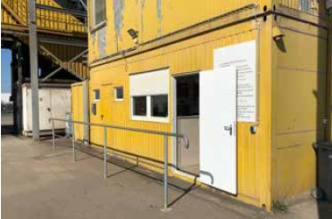
Abb. 2 Barriere zwischen Fahrweg und Tür
- Beim Rückwärtsfahren muss ausgeschlossen werden, dass andere Personen gefährdet werden. Kann das nicht ausgeschlossen werden, muss sich die Fahrerin bzw. der Fahrer einweisen lassen. Um die Sicherheit zu erhöhen können Sie zusätzliche Maßnahmen umsetzen. Hierzu gehören:
| –
| Kamera-Monitorsysteme (Abb. 3 und 3a) oder Rückfahrassistenzsysteme
|
| –
| Rückfahrwarneinrichtungen (akustisch und visuell)
|
| –
| ausreichende Abstände zu allen Verkehrsteilnehmenden und Objekten einhalten
|
| –
| max. Schrittgeschwindigkeit fahren
|
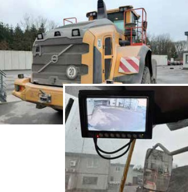
Abb. 3 Radlader mit Rückfahrkamerasystem
Abb. 3a Blick auf Monitor in der Fahrerkabine
- Sorgen Sie dafür, dass die Verkehrswege frei von Stolperstellen und herumliegenden Gegenständen sind.
- Sorgen Sie dafür, dass Wasser durch Gefälle in den Verkehrsflächen und Wasserabläufen schnell abfließen kann.
- Setzen Sie bei Schnee und Eis die allgemeine Räum- und Streupflicht um. Führen Sie einen Räum- und Streuplan ein.
- Sorgen Sie für eine gut sichtbare Beschilderung, die darauf hinweist, dass der Verladebereich unter den Silos kein Durchgangsbereich ist.
- Stellen Sie sicher, dass die Direktbeladung nur bei darauf eingestellter Anlage befahren werden kann (angehobene und gesicherte Schiene, gesicherter Verfahrkübel). Der Zugang zu diesem Bereich ist durch geeignete Schutzeinrichtungen (z. B. Schutzgitter, Lichtvorhänge, Schranken, Tore) gegen Betreten zu sichern.
- Sorgen Sie für eindeutige Regelung zum Befahren des Beladebereiches, z. B. mittels einer Ampel.
- Sorgen Sie dafür, dass Kippstellen im Werk eben sind. Müssen Fahrzeuge zum Abkippen eine Schräge befahren und die Gefahr des Abstürzens/Umstürzens besteht, sind Maßnahmen gegen das Überfahren der Kanten zu treffen, z. B. Leitplanken, Wall, Mauer.
- Installieren Sie in den Bereichen, in denen Anlagenteile von Fahrzeugen beschädigt werden können, einen entsprechenden Anfahrschutz.
- Sorgen Sie dafür, dass beim Fahren im Gelände, unabhängig von der Geschwindigkeit, immer der Sicherheitsgurt angelegt wird.
- Stellen Sie sicher, dass Ihre Beschäftigten sowie betriebsfremde Personen auf Ihrem Betriebsgelände immer Warnkleidung tragen.
- Setzen Sie Radlader mit Assistenzsystemen zur Sichtverbesserung nach allen Seiten ein ("Birdview").
- Weisen Sie Ihre Beschäftigten in die Nutzung neuer Fahrzeuge und Erdbaumaschinen ein und unterweisen Sie sie regelmäßig hinsichtlich der für Ihr Betriebsgelände festgelegten Regelungen.
 Beste Praxis Beste Praxis
|
3.2 Anlieferung und Lagerung der Ausgangsstoffe und Beschickung der Doseure
3.2.1 Gesteinskörnungen
Splitte und Sande werden per LKW, Bahn oder Schiff auf das Werksgelände geliefert und als Halden oder in Materialboxen gelagert. Diese sind zum Teil überdacht, um das Material vor Regen zu schützen. Die Beschickung der Vordosierung erfolgt meistens mittels Radlader.
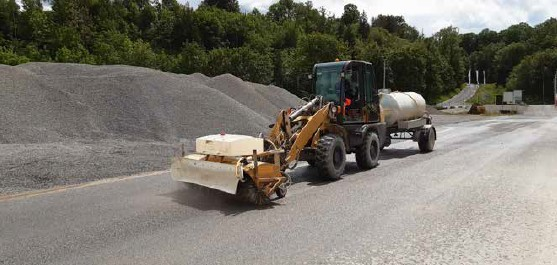
Abb. 5 Radlader mit Kehrmaschinenaufsatz und Wasserwagen
|
Weitere Informationen
|
- DGUV Information 213-102 "Branchen- oder tätigkeitsspezifische Hilfestellung Natursteinindustrie"
- DGUV Information 214-023 "Nur (nicht um-) kippen"
- Sicherheitsdatenblätter und Informationen der Hersteller
|
|
Gefährdungen
|
- Verschüttet oder getroffen werden durch nachrutschendes Material von Halden.
- Lärm beim Umgang mit Gesteinskörnungen.
- Staubentwicklung beim Abkippen der angelieferten Gesteinskörnungen.
- Verletzungen durch Einsinken während des Materialabzugs.
- Verschüttet bzw. getroffen werden bei Entleerungsprozessen, insbesondere bei der Bahn- und Schiffsentladung sowie auf/neben den Lagerungshalden durch das Material.
- Verletzungsgefahr aufgrund schlechter Sichtverhältnisse, z. B. wegen mangelnder Ausleuchtung oder defekten und verschmutzen Leuchtmitteln, schlecht einsehbarer Bereiche.
- Abstürzen von Fahrzeugen beim Fahren bzw. Betrieb auf Materialhalden.
- Umkippen von Fahrzeugen beim Abladen z. B. in Materialboxen, auf der Halde.
|
|
Maßnahmen
|
|
Organisatorisch/Betriebsfläche
Maßnahmen Materialhalden
Maßnahmen Vordosierung
|
3.2.2 Ausbauasphalt
Bei Anlieferung, Lagerung und Beschickung von Ausbauasphalt ergeben sich grundsätzlich die gleichen Gefährdungen wie bei Gesteinskörnungen. Jedoch sind hier auf Grund der Materialbeschaffenheit und der Haldengestaltung einige zusätzliche Gefährdungen gegeben.
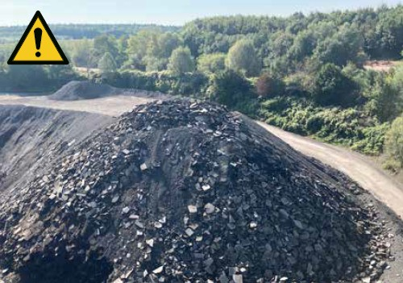
Abb. 9 Gefahr durch zu hohe Wandhöhen bei nicht selbständig nachrutschendem Material
|
Weitere Informationen
|
- DGUV Information 214-023 "Nur (nicht um-) kippen"
|
|
Gefährdungen
|
- Absturzgefahr von Personen bei der Eingangskontrolle auf LKW und Haufwerk.
- Über- oder Angefahren werden durch Fahrzeuge beim Heraustreten aus Gebäuden.
- Lärm beim Abkippen und beim Umgang mit Ausbauasphalt.
- Abstürzen von Fahrzeugen beim Fahren bzw. Betrieb auf Materialhalden.
- Verschüttet oder getroffen werden durch schlagartig nachrutschendes oder herunterbrechendes Material von Halden.
- Staubentwicklung beim Umgang mit dem angelieferten Ausbauasphalt.
- Verschüttet bzw. getroffen werden bei Entleerungsprozessen sowie auf/neben den Lagerungshalden durch das Material.
- Verletzungsgefahr aufgrund schlechter Sichtverhältnisse, z. B. wegen mangelnder Ausleuchtung oder defekten und verschmutzten Leuchtmitteln, schlecht einsehbarer Bereiche.
- Stolpern, Stürzen und Ausrutschen auf Verkehrsflächen bzw. Lagereinrichtungen durch Unebenheiten, Glätte oder Hindernisse.
- Verletzungen der Radladerfahrenden durch ruckartige Bewegungen des Radladers beim Lösen von verfestigtem Ausbauasphalt.
Diese Gefährdungen können Sie mit folgenden Maßnahmen reduzieren:
|
|
Maßnahmen
|
|
Organisatorisch/Betriebsfläche
- Stellen Sie eine Aufstiegshilfe für die Eingangskontrolle zur Verfügung.
- Bringen Sie Barrieren bei Ausgängen und Abgängen von Gebäuden an, die direkt auf Verkehrsflächen führen, damit Personen nicht direkt in den laufenden Verkehr treten können.
- Sorgen Sie für Ordnung und Sauberkeit auf dem gesamten Betriebsgelände, insbesondere im Bereich der Lagereinrichtungen.
- Unterweisen Sie Personen, die in diesem Bereich tätig sind, über die Gefährdungen im Bereich der Lagerhaltung.
- Minimieren Sie die Staubentwicklung auf Lagerplätzen und Verkehrswegen, z. B. durch regelmäßige Reinigung mittels Kehrsaugwagen und ggf. Benetzen der Verkehrswege mit Wasser.
Materialhalden
- Überzeugen Sie sich mindestens einmal täglich vom ordnungsgemäßen Zustand der Halden, von der Befahrbarkeit, der Absicherung auf der Halde und den Entnahmestellen am Fuß der Halden.
- Die Haldenhöhe darf bei nicht stetig nachrutschendem Material nicht mehr als 1 Meter über die Reichhöhe des Gewinnungsgerätes hinausragen (Abb. 9). Bei höheren Halden sind die Wandhöhen zu teilen (Abb. 10).
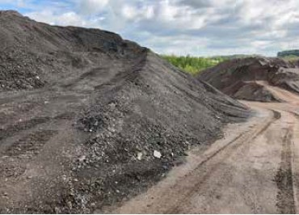
Abb. 10 eingefügte Zwischenebene auf Ausbauasphalthalde
- Gewährleisten Sie eine standsichere Aufstellung des Fahrzeuges. Standflächen sollen eben und ohne Schlaglöcher sein.
- Beachten Sie, soweit vorhanden, die zulässigen Neigungswinkel der Fahrzeughersteller.
- Achten Sie darauf, dass die Neigungswinkel von Rampen so ausgebildet sind, dass sie mit den von Ihnen eingesetzten Fahrzeugen sicher befahren werden können.
- Stellen Sie sicher, dass beim Abkippvorgang die Achsen der Zugmaschine und des Aufliegers des Fahrzeuges in einer Linie stehen.
- Installieren Sie bei ortsfesten Kippstellen feste Anschläge, zum Beispiel massive Stahl- oder Holzträger oder Stahlbetonaufkantungen. Die Höhe des Anschlages muss mindestens ein Drittel des Raddurchmessers der abkippenden Fahrzeuge betragen, damit ein Überfahren des Anschlages vermieden wird. Halten Sie den Anschlagbereich sauber, damit sich keine Materialrampe an der Kippstelle bilden kann.
- An ortsveränderlichen Kippstellen müssen mobile Anschläge oder Anschläge wie an ortsfesten Kippstellen vorhanden sein. Ist dies nicht möglich,
| –
| muss die Entladestelle mindestens 5 Meter vor der Absturzkante eingerichtet und das Material mit Erdbaumaschinen abgeschoben werden (Abb. 11),
|
| –
| muss dabei der Abschiebevorgang möglichst rechtwinkelig zur Absturzkante durchgeführt werden,
|
| –
| sind je nach Standfestigkeit des Untergrundes geeignete Maschinen für das Abschieben des Materials einzusetzen, zum Beispiel Radlader bei hoher Standfestigkeit und Raupen bei geringer Standfestigkeit.
|
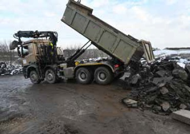
Abb. 11 Kippstelle auf der Halde (5 m vor der Kante)
- Vermeiden Sie ein gleichzeitiges Beschicken und Wegladen von der Halde, wenn dadurch eine gegenseitige Gefährdung, zum Beispiel durch Böschungsbruch entstehen kann (Abb. 12).
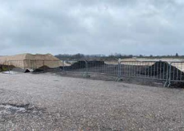
Abb. 12 Absperrung der Kippstelle bei Entnahme von Material am Haldenfuß
- Sorgen Sie dafür, dass die Halden am Haldenfuß nicht unterhöhlt werden.
- Sperren Sie Zufahrten zu Halden, die – auch temporär – nicht beschickt werden und sperren Sie auch nicht genutzte Abschnitte der Halden.
- Sichern Sie ergänzend zur Kippstelle das Plateau auf der Materialhalde z. B. durch Aufschüttung eines Randbegrenzungswalles mit arbeitstäglicher Kontrolle, Aufstellung von Warnbarken oder anderen geeigneten Mitteln zur Randbegrenzung.
- Sorgen Sie dafür, dass Ihre Beschäftigten im Radlader angeschnallt sind und lassen Sie ggf. verfestigtes Material im Vorfeld von einem Bagger lösen.
Asphaltgranulat-Vordosierung
- Decken Sie zugängliche Doseure mit Unterflurabzug mit Gitterrosten ab.
- Wählen Sie den Verschleißschutz in den Materialübergaben so aus, dass die Lärmentwicklung beim Befüllen minimiert wird.
|
3.2.3 Füller und andere blasfähige Zusatzstoffe
Bei der Herstellung von Asphalt werden eine Reihe von Zusatzstoffen beigemischt. Durch diese Zusatzstoffe treten unterschiedliche Gefährdungen auf.
|
Weitere Informationen
|
- DGUV Information 209-001 "Sicherheit beim Arbeiten mit Handwerkzeugen"
- DGUV Information 213-053 "Schlauchleitungen – Sicherer Einsatz"
- Sicherheitsdatenblätter und Informationen der Hersteller
|
|
Gefährdungen
|
- Verletzungen durch Bersten bzw. Platzen von Lager- und Fördereinrichtungen, z. B. bei zu hohem Arbeitsdruck, nicht funktionierenden Sicherheitseinrichtungen sowie mangelhaften Schlauchleitungen.
- Austreten von Staub, z. B. beim Reinigen der Filteranlagen.
- Lärm durch Kompressoranlagen beim Fördern von Füllern und blasförmigen Zusatzstoffen.
- Gesundheitliche Beeinträchtigung durch die jeweiligen chemischen oder physikalischen Eigenschaften.
Diese Gefährdungen können Sie mit folgenden Maßnahmen reduzieren:
|
3.2.4 Bitumen
Um Asphalt herstellen zu können, wird Bitumen als Bindemittel benötigt. Da dieses in Abhängigkeit seiner physikalischen Eigenschaften erst ab einer Temperatur von ca. 140 Grad Celsius ausreichend fließfähig ist, muss es heiß gelagert und verarbeitet werden. Die Temperatur wird durch eingebaute Heizungen erreicht und gehalten. Es treten insbesondere thermisch bedingte Gefährdungen auf.
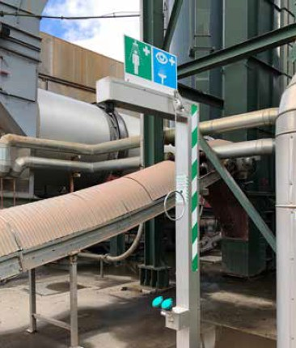
Abb. 14 Notdusche
|
Weitere Informationen
|
- DGUV Information 213-053 "Schlauchleitungen – Sicherer Einsatz"
- DIN EN 536:2016-01, Straßenbaumaschinen – Mischanlagen für Materialien zum Straßenbau – Sicherheitsanforderungen (EN 536:2015)
- DIN 4754-1:2015-03, Wärmeübertragungsanlagen mit organischen Wärmeträgern – Teil 1: Sicherheitstechnische Anforderungen, Prüfung
- DIN VDE 0105-100 (VDE 0105-100), Betrieb von elektrischen Anlagen – Teil 100: Allgemeine Festlegungen
- Anhang 2: Betriebsanweisung "Sicheres Arbeiten mit Bitumen"
- Anhang 3: Leitfaden "Verbrennung durch Bitumen"
- "Handbuch Gefährdungsbeurteilung Teil 2: Gefährdungsfaktoren", Kapitel 5.1 "Heiße Medien/Oberflächen" der BAuA
- Sicherheitsdatenblätter und Informationen der Hersteller
|
|
Gefährdungen
|
|
Bei Anlieferung von Bitumen
- Schwere Verbrennungen durch austretendes Bitumen, z. B. bei Überfüllung, Schlauch- und Kupplungsschäden, Probenahme.
- Reizungen von Haut, Atemwegen und Schleimhäuten und Gefahr ernster Augenschäden durch z. B. Austreten von Dämpfen aus Bitumen bei nicht ordnungsgemäß angeschlossenen oder defekten Fördereinrichtungen sowie bei der Entnahme von Proben und der Störungsbeseitigung.
- Vergiftung durch Schwefelwasserstoff.
- Lärm durch Kompressoranlagen beim Fördern von Bitumen in Tanks.
- Stolpern, Ausrutschen, Stürzen.
Im laufenden Betrieb
- Verbrennungsgefahr an heißen Oberflächen.
- Verbrennungsgefahr bei austretendem Bitumen.
- Absturzgefahr bei Arbeiten auf liegenden und stehenden Tanks.
- Brandgefahr im Bereich der Thermalölheizung durch
| –
| Erhitzung des Thermalöls über den Flammpunkt hinaus,
|
| –
| Senkung des Flammpunktes durch Überalterung des Thermalöls,
|
| –
| bei Leckagen in die Isolierung eindringendes Thermalöl.
|
Diese Gefährdungen können Sie mit folgenden Maßnahmen reduzieren:
|
|
Maßnahmen
|
|
Bei Anlieferung von Bitumen
Im laufenden Betrieb
- Sorgen Sie dafür, dass die im jeweiligen Sicherheitsdatenblatt angegebene maximale Temperatur für die Lagerung und die Verarbeitung von Bitumen eingehalten wird. Kontrollieren Sie diese regelmäßig.
- Kontrollieren Sie regelmäßig die Wärmeisolierungen an den Förderleitungen.
- Sorgen Sie dafür, dass Thermalöl gemäß den Angaben des Herstellers regelmäßig geprüft wird, da sich bei der Zersetzung der Flammpunkt ändert.
- Thermalölgetränkte Isolierung ist auszutauschen.
- Stellen Sie eine vollständige Isolierung der Leitungen in Bereichen mit heißen Oberflächen sicher, auch in den Übergangsbereichen und Rohrbögen.
- Die Isolierung ist vor eigenständigem Lösen und mechanischer Beschädigung zu schützen.
- Lassen Sie den Brenner sowie die Rohrleitungen der Thermalölheizung regelmäßig prüfen.
- Lassen Sie die Anlage vor Störungsbeseitigung abkühlen, drucklos machen, geeignete PSA (einschließlich Gesichtsschutz!) benutzen.
- Stellen Sie Ihren Beschäftigten für die Anlieferung und die Störungsbeseitigung persönliche Schutzausrüstungen wie bedeckende Kleidung, mindestens knöchelhohe Sicherheitsschuhe, Schutzhelm mit Visier und Nackenschutz, ggf. dichtschließende Schutzbrillen, z. B. Korbschutzbrillen, langstulpige und hitzebeständige Schutzhandschuhe und ggf. Gehörschutz zur Verfügung und sorgen Sie dafür, dass diese getragen werden.
- Sorgen Sie für sichere Aufstiege und Geländer auf den Tanks.
Beste Praxis
Zur drucklosen Entladung von Bitumen aus dem Tankkraftwagen hat sich der Einsatz von stationären Pumpen (Befüllpumpen) bewährt (Abb. 17). Dadurch ist die Gefahr durch plötzlichen Austritt von heißem Bitumen durch Schlauchplatzer oder andere druckbedingte Beschädigungen am Befüllschlauch gebannt. Ferner kann durch die Verwendung von Befüllpumpen die mit organischen Dämpfen aus Bitumen durchsetzte Drängeluft aus dem Bitumentank in den Tankkraftwagen zurückgependelt und Lärm durch den Betrieb eines Bordkompressors vermieden werden.
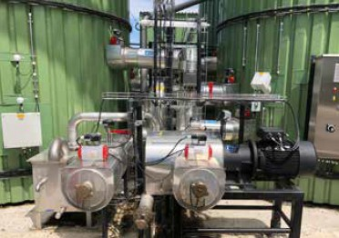
Abb. 17 Stationäre Pumpe zum Entladen von Bitumen
|
3.2.5 Zusätze und Additive
Für Asphaltmischgutarten und -sorten mit speziellen Eigenschaften werden Zusätze und Additive mit verschiedenen chemischen und physikalischen Eigenschaften eingesetzt. Im Zuge der Anlieferung und Lagerung treten unterschiedliche Gefährdungen auf.
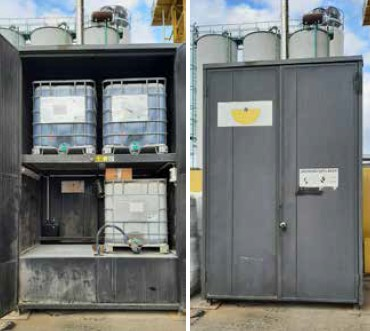
Abb. 18 Verschließbarer Schrank mit Auffangwanne für die Lagerung von Additiven in IBC-Behältern
|
Weitere Informationen
|
- DGUV Information 208-043 "Sicherheit von Regalen"
- Sicherheitsdatenblätter und Informationen der Hersteller
|
|
Gefährdungen
|
- Über- oder Angefahren werden durch Fahrzeuge.
- Reizungen von Haut, Atemwegen und Schleimhäuten und Gefahr ernster Augenschäden, z. B. durch unbeabsichtigtes Austreten von Zusätzen und Additiven.
- Staubentwicklung, z. B. beim Reinigen der Filteranlagen.
- Ausrutschen, Stürzen, Getroffen werden beim Abladen und Einlagern.
- Einsturz von Lagereinrichtungen, Herunterfallen von Lagergut.
|
|
Maßnahmen
|
- Stellen Sie Ihren Beschäftigten persönliche Schutzausrüstungen, wie Sicherheitsschuhe, Schutzhelm und Schutzbrillen zur Verfügung und sorgen Sie dafür, dass diese getragen werden.
- Unterweisen Sie Ihre Beschäftigten, die in diesem Bereich tätig sind, hinsichtlich der vorhandenen Gefährdungen.
- Stellen Sie für Notfälle schnell erreichbare Augenspülungseinrichtungen zur Verfügung.
- Verhindern Sie, dass Unbeteiligte in den Arbeitsbereich gelangen.
- Stellen Sie die Behälter so auf, dass sie gegen Anfahren geschützt sind
- Beachten Sie die aktuellen Sicherheitsdatenblätter, technischen Merkblätter und erstellen Sie für die Arbeitsplätze und die Tätigkeiten mit den Gefahrstoffen Betriebsanweisungen.
- Achten Sie darauf, dass die Kennzeichnung der Lagereinrichtung eindeutig und aktuell ist (mindestens Name des Gefahrstoffes und Gefahrstoff-Piktogramme).
- Achten Sie darauf, dass die Lagereinrichtungen ausreichend dimensioniert und tragfähig sind und kontrollieren Sie diese regelmäßig (Abb. 18).
- Zulässige Regallasten sind an den Regalen zu kennzeichnen und dürfen nicht überschritten werden.
|
3.2.6 Gleit- und Trennmittel
Um Anhaftungen von Asphaltgranulat und Asphaltmischgut im Produktionsprozess und beim späteren Transport zu vermeiden, können Gleit- und Trennmittel zum Einsatz kommen. Gleit- und Trennmittel können in stationären Behältern oder in IBC-Behältern gelagert werden. Von den Gleit- und Trennmitteln können bei Kontakt gesundheitliche Gefahren ausgehen.
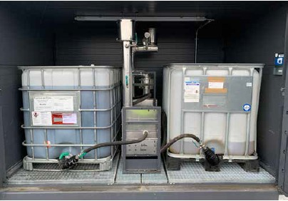
Abb. 19 Lager mit Dosiervorrichtung für Gleit- und Trennmittel oder andere Flüssigadditive
|
Weitere Informationen
|
- DGUV Information 213-012 "Gefahrgutbeförderung in Pkw und Kleintransportern"
- DGUV Information 213-053 "Schlauchleitungen – Sicherer Einsatz"
- Sicherheitsdatenblätter und Informationen der Hersteller
|
|
Gefährdungen
|
- Einatmen oder Aufnahme über die Haut kann zu Gesundheitsschäden führen.
Die Atemwege und die Augen können gereizt werden. Hierbei sind Schwindel, Kopfschmerzen, Übelkeit und Konzentrationsstörungen möglich.
- Ausrutschen, Stolpern, Stürzen beim Betreten der Lagerräume.
- Abstürzen, z. B. bei Arbeiten auf Behältern, oder beim Aufstieg auf Behälter.
- Quetschen, Scheren beim Umgang mit den Gebinden im Lagerraum.
|
|
Maßnahmen
|
- Beachten Sie die aktuellen Sicherheitsdatenblätter, technischen Merkblätter und erstellen Sie für die Arbeitsplätze und die Tätigkeiten mit den Gefahrstoffen Betriebsanweisungen.
- Stellen Sie Ihren Beschäftigten persönliche Schutzausrüstungen wie Sicherheitsschuhe, Schutzhelm, Schutzbrille und geeignete Schutzhandschuhe zur Verfügung und sorgen Sie dafür, dass diese getragen werden.
- Vermeiden Sie Berührungen mit der Haut und den Augen.
- Halten Sie Augenspüleinrichtungen an geeigneten Orten vor.
- Lassen Sie die Lagerräume regelmäßig reinigen und lüften.
- Bewahren Sie die Behälter ordnungsgemäß verschlossen in einem trockenen und gut belüfteten Lagerraum auf.
- Bemessen Sie die Lagerräume so, dass die Gebinde sicher aus- und eingelagert werden können und ein sicherer Zugang vorhanden ist (Abb. 19).
- Sorgen Sie dafür, dass ausreichende Beleuchtung in allen Arbeits- und Verkehrsbereichen vorhanden ist.
- Halten Sie die Gebinde während des Transports immer geschlossen.
- Verwenden Sie für das jeweilige Zusatzmittel geeignete Pumpen und Schlauchleitungen und prüfen Sie diese regelmäßig.
- Sorgen Sie dafür, dass sich bei der Lagerung der Gebinde die Anschlüsse der Pumpen nicht in Augenhöhe befinden.
- Achten Sie darauf, dass die Kennzeichnung der Gebinde eindeutig und aktuell ist (mindestens Name des Gefahrstoffes und Gefahrstoff-Piktogramme).
- Im Sicherheitsdatenblatt ist auch die Temperatur angegeben, bei der es zu einer Bildung eines zündfähigen Gasgemisches kommen kann.
- Achten Sie darauf, dass alle Arbeitsbereiche, insbesondere Pumpen, Ventile und Anschlussleitungen, ohne Absturzgefahr zu erreichen sind.
|
3.3 Energieträger und Heizung
3.3.1 Heizöl
Heizöl, das in speziellen Tanks gelagert und mittels Pumpen und Rohrleitungen transportiert wird, dient als Brennstoff für den Brenner.
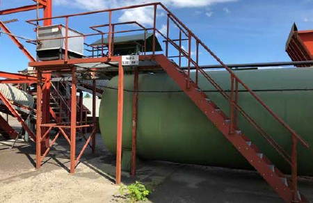
Abb. 20 sichere Zugänge und Standfläche zum Tankdom
|
Weitere Informationen
|
- DGUV Information 213-053 "Schlauchleitungen – Sicherer Einsatz"
- DWA-A 780-1:2018-05, Technische Regel wassergefährdender Stoffe (TRwS) – Oberirdische Rohrleitungen – Teil 1: Rohrleitungen aus metallischen Werkstoffen
- DIN EN 746-1:2010-02, Industrielle Thermoprozessanlagen – Teil 1: Allgemeine Sicherheitsanforderungen an industrielle Thermoprozessanlagen (EN 746-1:1997+A1:2009)
- DIN EN 746-2:2011-02, Industrielle Thermoprozessanlagen – Teil 2: Sicherheitsanforderungen an Feuerungen und Brennstoffführungssysteme (EN 746-2:2010)
- DIN 2403:2018-10, Kennzeichnung von Rohrleitungen nach dem Durchflussstoff
- Sicherheitsdatenblätter und Informationen der Hersteller
|
|
Gefährdungen
|
- Verbrennung bei Entzündung von austretendem Material und beim Kontakt mit heißen Oberflächen oder offenen Flammen.
- Aspirationsgefahr – kann beim Verschlucken und Eindringen in die Atemwege tödlich sein.
- Gesundheitsschädigung durch Einatmen von Dämpfen.
- Hautreizung bei Kontakt.
- Absturz vom Tankdom.
|
|
Maßnahmen
|
- Stellen Sie sicher, dass die Anlagenteile regelmäßig auf Dichtheit geprüft werden und die Prüfung dokumentiert wird.
- Installieren Sie einen Schutz gegen Anfahren des Tanks und der Rohrleitungen.
- Sorgen Sie für sichere Zugänge zum und Standflächen am Tankdom (Abb. 20).
- Achten Sie auf eine ausreichende Anzahl an Absperreinrichtungen.
- Organisieren Sie die Notfallmaßnahmen für den Fall eines unbeabsichtigten Materialaustritts (Havarieplan). Stellen Sie sicher, dass Absperreinrichtungen und Rohrleitungen eindeutig gekennzeichnet und funktionsfähig sind (Abb. 21).
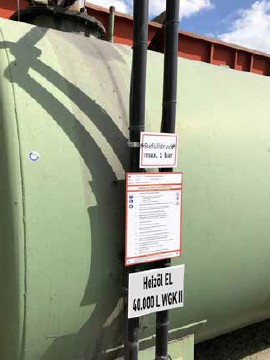
Abb. 21 Kennzeichnung Tank und Betriebsanweisung gut sichtbar angebracht
- Kennzeichnen Sie den Bereich des Tanks nach ASR A1.3 (Abb. 22).
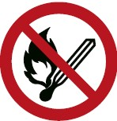
Abb. 22 Verbotszeichen "Keine offene Flamme; Feuer, offene Zündquelle und Rauchen verboten"
- Stellen Sie sicher, dass sich keine Zündquellen, wie heiße Oberflächen oder offene Flammen, in der Nähe der Anlagenteile befinden.
- Stellen Sie Brandbekämpfungsmittel bereit.
- Stellen Sie geeignete Schutzhandschuhe, Schutzkleidung sowie Augen- oder Gesichtsschutz zur Verfügung.
- Nehmen Sie das Material in das Gefahrstoffkataster auf.
|
3.3.2 Erdgas
Erdgas dient als Brennstoff für den Brenner. Ab der Anschlussstelle Erdgasversorgung wird eine Erdgasstrecke, bestehend aus Rohrleitungen, Absperreinrichtungen und Druckminderer, angebracht.
|
Weitere Informationen
|
- DGUV Information 203-092 "Arbeitssicherheit beim Betrieb von Gasanlagen"
- DIN EN 746-1:2010-02, Industrielle Thermoprozessanlagen – Teil 1: Allgemeine Sicherheitsanforderungen an industrielle Thermoprozessanlagen (EN 746-1:1997+A1:2009)
- DIN EN 746-2:2011-02, Industrielle Thermoprozessanlagen – Teil 2: Sicherheitsanforderungen an Feuerungen und Brennstoffführungssysteme (EN 746-2:2010)
- Sicherheitsdatenblatt und Informationen der Hersteller
|
|
Gefährdungen
|
- Verbrennung durch entzündetes Gas.
- Explosionsgefahr.
- Erstickungsgefahr bei hoher Gaskonzentration infolge der Sauerstoffverdrängung.
- Betäubende Wirkung bei Einatmen des Gases.
|
|
Maßnahmen
|
- Stellen Sie sicher, dass die Anlagenteile regelmäßig auf Dichtheit geprüft werden und die Prüfung dokumentiert wird.
- Legen Sie die Ex-Zonen fest und erstellen Sie ein Explosionsschutzdokument.
- Organisieren Sie die Notfallmaßnahmen für den Fall eines unbeabsichtigten Gasaustritts, wie Sicherstellung der Funktion und Kennzeichnung von Absperreinrichtungen und Rohrleitungen und Erstellen eines Havarieplans.
- Stellen Sie sicher, dass sich keine Zündquellen, wie heiße Oberflächen oder offene Flammen, in der Nähe der Anlagenteile befinden.
- Sorgen Sie dafür, dass keine eigenständigen Arbeiten an der Erdgasversorgung durchgeführt werden. Die Bestimmungen des Erdgasversorgers sind zu beachten.
- Nehmen Sie Erdgas in das Gefahrstoffkataster auf.
- Entspannungs-Abblasleitungen sind möglichst außerhalb geschlossener Räume zu führen.
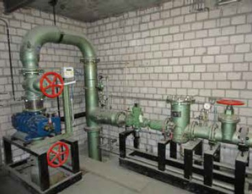
Abb. 23 Erdgasanschluss in Übergabestation
|
3.3.3 Flüssiggas
Flüssiggas dient als Brennstoff für den Brenner. Es wird in speziellen Flüssiggastanks gelagert.
|
Weitere Informationen
|
- DGUV Information 203-092 "Arbeitssicherheit beim Betrieb von Gasanlagen"
- DIN EN 746-1:2010-02, Industrielle Thermoprozessanlagen – Teil 1: Allgemeine Sicherheitsanforderungen an industrielle Thermoprozessanlagen (EN 746-1:1997+A1:2009)
- DIN EN 746-2:2011-02, Industrielle Thermoprozessanlagen – Teil 2: Sicherheitsanforderungen an Feuerungen und Brennstoffführungssysteme (EN 746-2:2010)
- Sicherheitsdatenblatt und Informationen der Hersteller
|
|
Gefährdungen
|
- Verbrennungen durch entzündetes Gas.
- Explosionsgefahr.
- Verletzung durch Bersten des Tanks infolge von Erwärmung des Flüssiggases.
- Erstickungsgefahr bei hoher Gaskonzentration infolge der Sauerstoffverdrängung.
- Betäubende Wirkung bei Einatmen des Gases.
|
3.3.4 Braunkohlenstaub (BKS)
Braunkohlenstaub dient als Brennstoff für den Brenner. Die Förderung erfolgt über eine Kohlenstaubdosierung und ein Fördergebläse. Der Braunkohlenstaub wird in einem speziellen Silo gelagert.
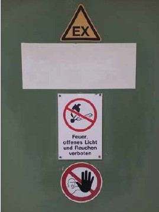
|
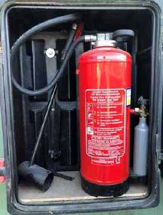
|
Abb. 25 Hinweistafel Ex.zone |
Abb. 26 BKS-Löscher |
|
Weitere Informationen
|
- DIN EN 746-1:2010-02, Industrielle Thermoprozessanlagen – Teil 1: Allgemeine Sicherheitsanforderungen an industrielle Thermoprozessanlagen (EN 746-1:1997+A1:2009)
- DIN EN 746-2:2011-02, Industrielle Thermoprozessanlagen – Teil 2: Sicherheitsanforderungen an Feuerungen und Brennstoffführungssysteme (EN 746-2:2010)
- Sicherheitsdatenblatt und Informationen der Hersteller
|
|
Gefährdungen
|
- Verbrennung durch Entzünden des BKS.
- Verletzung infolge einer Staubexplosion durch Aufwirbelung des BKS.
- Verletzung infolge einer Braunkohlenstaubexplosion durch Glimmbrand im Silo.
- Absturzgefahr bei Arbeiten am Siloauslauf.
- Rutschgefahr durch ausgetretenen BKS.
- Gesundheitsgefahr beim Einatmen von BKS.
- Augenverletzung bei Kontakt mit BKS.
|
|
Maßnahmen
|
- Stellen Sie sicher, dass die BKS-Anlage vor Inbetriebnahme und anschließend in regelmäßigen Abständen gemäß BetrSichV geprüft wird.
- Führen Sie regelmäßig eine Prüfung der Erdungsanschlüsse durch.
- Sorgen Sie für die notwendige Kennzeichnung am Zugangsbereich (Abb. 25).
- Stellen Sie geeignete BKS-Löscher bereit (Abb. 26).
- Organisieren Sie die Notfallmaßnahmen für den Fall eines unbeabsichtigten Materialaustritts, wie Sicherstellung der Funktion und Kennzeichnung von Absperreinrichtungen und Rohrleitungen und Erstellen eines Havarieplans (Anhang 4).
- Ausgetretener BKS darf nur mit entspanntem Wasser (Seife) oder zugelassenem Staubsauger mit Ex-Schutz entfernt werden.
- Stellen Sie bei Ihren internen sowie externen Beschäftigten eine einschlägige Unterweisung sicher, z. B. für die unbeabsichtigte Freisetzung von Gefahrstoffen (Staub-Luft-Gemisch), hinsichtlich der Zündgefahren oder -quellen sowie zu der Prüfung und Sichtprüfung von Arbeitsmitteln.
- Stellen Sie sicher, dass eine ausreichende Menge Inertgas verfügbar ist bzw. kurzfristig beschafft werden kann. (Vorhaltung an der Anlage ist nicht erforderlich.)
- Legen Sie die Ex-Zonen fest und erstellen Sie ein Explosionsschutzdokument.
- Stellen Sie geeignete Schutzhandschuhe, Schutzkleidung, Augenschutz und Atemschutz zur Verfügung.
- Sorgen Sie für eine sichere Standfläche bei Arbeiten am Siloauslauf und achten Sie darauf, dass der Bereich unterhalb des Silos nicht als Lagerfläche verwendet wird.
|
3.3.5 Zündgas
Zündgas (Propan) dient der Versorgung des im Brennerkopf angeordneten Zündbrenners, zur Zündung der Hauptbrennstoffe Heizöl, Erdgas, Flüssiggas oder Braunkohlestaub.
|
Weitere Informationen
|
- DGUV Information 205-030 "Umgang mit ortsbeweglichen Flüssiggasflaschen im Brandeinsatz"
- DGUV Information 213-053 "Schlauchleitungen – Sicherer Einsatz"
- Sicherheitsdatenblatt und Informationen der Hersteller
|
|
Gefährdungen
|
- Verletzungen durch umfallende Flaschen.
- Explosion durch Rückschlag der Flamme in die Flasche.
- Explosion oder Brandentwicklung durch undichte Schläuche oder Verbindungsstücke.
- Verletzung durch Bersten der Flasche infolge von Erwärmung.
|
3.4 Vordosieren, Fördern, Trocknen, Entstauben
3.4.1 Vordosieren
Für die Herstellung von Asphalt muss das Mineral, aufgeteilt in verschiedene Korngrößen, dosiert zugegeben werden. Hierfür wird für jede Fraktion ein Doseur durch z. B. einen Radlader beschickt. Aus den Doseuren wird das Material bedarfsweise mittels Abzugseinrichtung auf Sammelbänder aufgegeben. Je nach Art der Arbeiten in und um den Doseur können Sie mit verschiedenen Maßnahmen die Gefahren für die Sicherheit und Gesundheit ihrer Beschäftigten vermeiden.
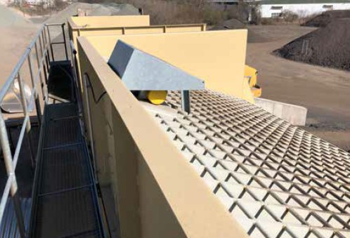
Abb. 28 Doseur mit Rostabdeckung, Laufsteg und Rüttler
|
Weitere Informationen
|
- DIN EN 536:2016-01, Straßenbaumaschinen – Mischanlagen für Materialien zum Straßenbau – Sicherheitsanforderungen (EN 536:2015)
- Betriebsanleitung des Herstellers
|
|
Gefährdungen
|
- Verletzungen durch Einsinken während des Materialabzugs.
- Absturz vom oder in den Doseur.
- Verschüttet bzw. getroffen werden bei der Beseitigung von Materialbrücken.
- Verletzungen durch z. B. Hilfsmittel, Verschlusseinrichtungen bei unsachgemäßer Beseitigung von Stopfern und Materialbrücken.
- Stolpern, Stürzen und Ausrutschen auf Material im Bereich der Dosiereinheit.
|
|
Maßnahmen
|
- Vermeiden Sie Gefährdungen, die durch den Abzugsmechanismus der Doseure oder durch das abgezogene Material entstehen, z. B. durch angebrachte Gitterroste über den Doseuren (Abb. 28).
- Sollte ein Material zu Brückenbildung neigen, installieren Sie geeignete technische Maßnahmen zur automatischen Beseitigung der Materialbrücken, z. B. Rüttler (Abb. 29).
- Gestalten Sie die Roste so, dass sie leicht zu reinigen sind, z. B. mit dem Radlader (Abb. 30).
- Prüfen Sie, ob bei frostgefährdetem Material ein Leeren der Doseure über Nacht nötig oder möglich ist, um Stopfer zu vermeiden.
- Sorgen Sie dafür, dass Doseure zur Störungsbeseitigung sicher bestiegen und betreten werden können. Sichern Sie Ihre Beschäftigten in diesem Fall gegen Absturz.
- Bei der Störungsbeseitigung sind die Abzugseinrichtungen abzuschalten und gegen Wiedereinschalten zu sichern.
- Sorgen Sie dafür, dass bei notwendigen Arbeiten im Doseur
| –
| die für Behälter, Silos und enge Räume geltenden besonderen Sicherheitsregeln eingehalten werden und
|
| –
| eine Abstimmung mit dem Fahrer oder der Fahrerin des Radladers erfolgt.
|
- Sorgen Sie für ausreichende Beleuchtung und saubere Verkehrswege.
- Stellen Sie geeignete Persönliche Schutzausrüstungen zur Verfügung.
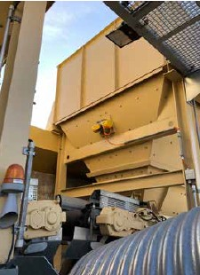
|
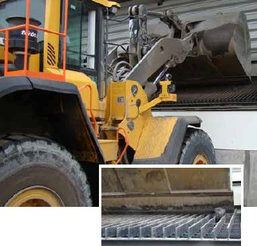
|
Abb. 29 Rüttler am Doseur |
Abb. 30 Radlader reinigt Rost
Abb. 30a Detailansicht von Abb. 3 |
|
3.4.2 Fördern
Mit Förderanlagen werden Mineralien zwischen den einzelnen Verarbeitungsstufen transportiert. Anlagen zur Förderung sind Förderbänder, Becherwerke und Vibrationsrinnen. Schutzeinrichtungen an Förderanlagen verhindern das Eingreifen in Gefahrstellen oder den Aufenthalt in Gefahrbereichen. Häufig entstehen Probleme durch Verunreinigungen. Gefährlich wird es, wenn zu deren Beseitigung in automatische Bereiche eingegriffen wird oder wenn Schutzeinrichtungen entfernt und danach nicht wieder montiert werden.
|
Weitere Informationen
|
- DGUV Information 208-018 "Stetigförderer"
- DGUV Information 213-054 "Maschinen – Sicherheitskonzepte und Schutzeinrichtungen"
- DIN EN 618:2011-06, Stetigförderer und Systeme – Sicherheits- und EMV-Anforderungen an mechanische Fördereinrichtungen für Schüttgut ausgenommen ortsfeste Gurtförderer (EN 618:2002+A1:2010)
- DIN EN 620:2011-07, Stetigförderer und Systeme – Sicherheits- und EMV-Anforderungen an ortsfeste Gurtförderer für Schüttgut (EN620:2002+A1:2010)
- DIN EN 536:2016-01, Straßenbaumaschinen – Mischanlagen für Materialien zum Straßenbau – Sicherheitsanforderungen (EN 536:2015)
- "Handbuch Gefährdungsbeurteilung Teil 2: Gefährdungsfaktoren", Kapitel 5.1 "Heiße Medien/Oberflächen" der BAuA
|
|
Gefährdungen
|
- Eingezogen oder gequetscht werden an den beweglichen Teilen der Förderanlagen.
- Abstürzen, gequetscht werden, getroffen werden bei der Beseitigung von Störungen besonders im Winterbetrieb, z. B. durch
| –
| festgefrorene und durchrutschende Förderbänder,
|
| –
| Verstopfungen und Anbackungen, z. B. verklumptes Material an Schiebern, Klappen und Abstreifern.
|
- Brandgefahr beim Betrieb von Heizlüftern und beim Abtauen von Frostverstopfungen mit Gasbrennern.
- Getroffen werden durch herunterfallendes Fördergut aus Förderanlagen.
- Stolpern und Stürzen durch ausgetretenes Fördergut aus den Förderanlagen.
- Verbrennungsgefahr an heißen Oberflächen (Heißbecherwerk).
- Anstoßen an festen Bauteilen.
- Einwirkung von Lärm und Staub.
Diese Gefährdungen können Sie mit folgenden Maßnahmen reduzieren:
|
|
Maßnahmen
|
|
Allgemein
- Achten Sie darauf, dass alle beweglichen Teile der Förderanlagen so gestaltet oder gesichert sind, dass von ihnen keine Gefährdungen ausgehen.
- Rüsten Sie einzeln zu betreibende Förderanlagen so aus, dass sie allpolig abgeschaltet und gegen Wiedereinschalten gesichert werden können.
- Überprüfen Sie, ob alle gefahrbringenden Bewegungen von Not-Halt-Einrichtungen unterbrochen werden können.
- Verhindern Sie den ungewollten Austritt von Material aus Förderanlagen.
- Kontrollieren Sie regelmäßig die Förderanlagen auf korrekte Funktion und prüfen Sie die Vollständigkeit der Schutzeinrichtungen.
- Sorgen Sie für eine regelmäßige Reinigung der Übergabestellen und der Verkehrswege.
- Stellen Sie Ihren Beschäftigten geeignete persönliche Schutzausrüstungen, wie z. B. Sicherheitsschuhe, Schutzhelm, Schutzbrille, Atemschutz, Schutzhandschuhe und ggf. Gehörschutz zur Verfügung und sorgen Sie dafür, dass diese getragen werden.
Förderbänder
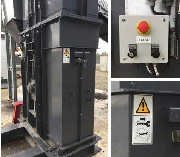
|
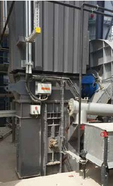
|
Abb. 33 Becherwerk-Klappe mit Schlüssel-Transfer-System
und Vor-Ort-Schaltung |
Abb. 34 Becherwerk mit Isolierung |
Becherwerke
- Gewährleisten Sie, dass Öffnungen an Becherwerken entsprechend der Häufigkeit des Zugangs mit Schutzeinrichtungen gesichert sind.
| –
| Häufig (> 1-mal in 8 h) genutzte Klappen müssen elektrisch verriegelt oder mit Schlüsseltransfersystemen gesichert sein. Der untere Teil des Becherwerks muss mindestens mit einer trennenden Schutzeinrichtung mit einer Verriegelungseinrichtung versehen sein.
|
| –
| Wartungsöffnungen für seltenen Zugang müssen mit feststehenden trennenden Schutzeinrichtungen gesichert sein. Diese dürfen nur mit Werkzeug zu öffnen sein und dürfen im geöffneten Zustand nicht in der Schutzstellung verbleiben. Andernfalls müssen die Klappen elektrisch verriegelt oder mit Schlüsseltransfersystemen gesichert sein (Abb. 33).
|
| –
| Klappen für reine Kontrolltätigkeiten müssen mit einem fest angebrachten Eingreifschutz versehen oder mit einer elektrischen Verriegelung ausgestattet sein.
|
- Sehen Sie technische Maßnahmen zum Schutz gegen Verbrennungsgefahr vor, z. B. Becherwerke mit Isolierung (Abb. 34).
- Isolieren und kennzeichnen Sie heiße Oberflächen und legen Sie Schutzmaßnahmen fest.
|
3.4.3 Trocknen
Die Trockentrommel ist als Teilmaschine in einer Asphaltmischanlage zwischen Vordosierung und Becherwerk eingebaut. Sie ist motorisch drehbar und dient mit dem angeflanschten Brenner zum Trocknen von Mineralstoffen für den bitumenhaltigen Straßenbau.
Das Mineralgemisch wird abhängig vom Mischgut auf ca. 130 bis 250 Grad Celsius erhitzt. Nach längerem Betrieb kann es notwendig werden, die Einbauten der Trockentrommel teilweise oder ganz zu erneuern.
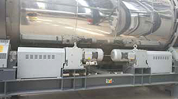
|
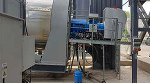
|
Abb. 35 Schutzeinrichtung an Laufrollen und Antriebswellen der Trockentrommel |
Abb. 36 Sicherer Arbeitsstand am Brenner |
|
Weitere Informationen
|
- DGUV Information 213-054 "Maschinen – Sicherheitskonzepte und Schutzeinrichtungen"
- DIN EN 536:2016-01, Straßenbaumaschinen – Mischanlagen für Materialien zum Straßenbau – Sicherheitsanforderungen (EN 536:2015)
- DIN EN 746-1:2010-02, Industrielle Thermoprozessanlagen – Teil 1: Allgemeine Sicherheitsanforderungen an industrielle Thermoprozessanlagen (EN 746-1:1997+A1:2009)
- DIN EN 746-2:2011-02, Industrielle Thermoprozessanlagen – Teil 2: Sicherheitsanforderungen an Feuerungen und Brennstoffführungssysteme (EN 746-2:2010)
- "Handbuch Gefährdungsbeurteilung Teil 2: Gefährdungsfaktoren", Kapitel 5.1 "Heiße Medien/Oberflächen" der BAuA
|
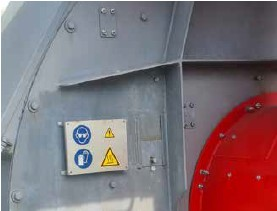
|
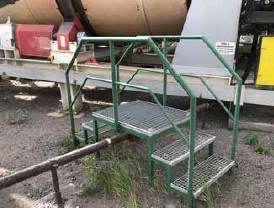
|
Abb. 37 Hinweis auf vorgeschriebene PSA
an der Sichtöffnung |
Abb. 38 Sichere Verkehrswege über Rohrleitungen |
|
Gefährdungen
|
- Quetsch- und Einzugsgefahr an den bewegten Teilen der Trommel und deren Antrieben und Stützrollen sowie zwischen Trommel und Stirnwand.
- Absturzgefahr auf dem Brennerpodest und an der Wartungsöffnung der Trockentrommel.
- Verbrennung an heißen Oberflächen und durch Flammrückschlag.
- Brand- oder Verpuffungsgefahr bei Störungen am Brenner oder der Materialzufuhr.
- Stolpern und Stürzen bei Kontrollgängen.
- Einwirkung von Lärm.
|
|
Maßnahmen
|
- An der Trockentrommel sind alle Einzugsstellen von Antrieben, Wellen, Kupplungen, Ketten u. a. durch Verkleidungen oder andere Schutzeinrichtungen zu sichern (Abb. 35).
- Sorgen Sie für sichere hochgelegene Arbeitsplätze, Bühnen mit Geländer und einem sicheren Aufstieg (Abb. 36).
- Beim Beobachten der Brennflamme durch Schaulöcher ohne Schutzglas sind ein Helm mit hitzebeständigem Gesichtsschutz und Schutzhandschuhe zu benutzen (Abb. 37).
- Prüfen und warten Sie den Brenner regelmäßig.
- Beachten Sie beim Festlegen der Schutzmaßnahmen die spezifischen Eigenschaften der unterschiedlichen Brennstoffe. Ein ungewollter Brennstoffaustritt ist durch technische Maßnahmen zu verhindern.
- Halten Sie Verkehrswege frei und beseitigen Sie Stolper- und Sturzgefahrquellen (Abb. 38).
- Sorgen Sie für ausreichende Beleuchtung im Arbeits- und Verkehrsbereich.
- Sorgen Sie dafür, dass bei Arbeiten am laufenden Brenner Gehörschutz getragen wird.
|
3.4.4 Entstaubung
Die Entstaubungsanlage dient der Filterung der entstehenden staubhaltigen Abgase und Abluft der Asphaltmischanlage. Die so abgeschiedenen Stäube werden über Fördereinrichtungen einem Silo zugeführt und dort zwischengelagert (sog. Eigenfüller). Die gereinigten Gase werden mit einem Gebläse über den Kamin abgeführt.
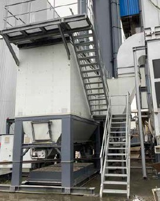
Abb. 39 Treppe als Zugang zur Wartungsbühne der Filteranlage
|
Weitere Informationen
|
- DIN EN 536:2016-01, Straßenbaumaschinen – Mischanlagen für Materialien zum Straßenbau – Sicherheitsanforderungen (EN 536:2015)
- Betriebsanleitung des Herstellers
|
|
Gefährdungen
|
- Absturzgefahr bei Störungsbeseitigung, z. B. der Positionierung des Spülluftwagens.
- Brandgefahr bei einziehenden Braunkohlenstäuben oder anderen glimmfähigen Fremdkörpern.
- Augenverletzungen bei Kontakt mit Staub.
- Einwirkung von Lärm durch das Gebläse.
- Hitze im Bereich der Filter, Gebläse, Kamin und Luftkanäle.
|
|
Maßnahmen
|
- Sorgen Sie für sichere Arbeitsstände und Zugänge bei Arbeiten in der Höhe (Abb. 39).
- Achten Sie darauf, dass bei allen notwendigen Arbeiten am oberen Teil der Filteranlage ein Absturz sicher verhindert wird, z. B. durch Erhöhung der Geländer, Einsatz von sicheren Aufstiegshilfen (Abb. 40).
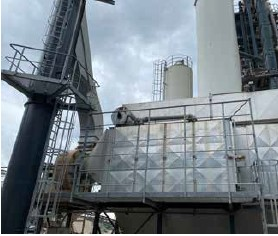
Abb. 40 Erhöhte Geländer auf der Wartungsbühne der Filteranlage
- Vermeiden Sie Brandgefahr durch regelmäßige Wartung laut Herstellerangaben.
- Vermeiden Sie brennbare Fremdkörper auf den Mineralhalden (Abb. 41).
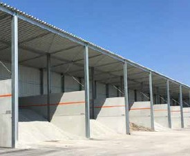
Abb. 41 Die Überdachung der Mineralhalde ermöglicht die trockene Lagerung der Mineralstoffe und mindert diffuse Staubemissionen. Der Eintritt von brennbaren Fremdkörpern wird reduziert.
- Isolieren Sie heiße Oberflächen. Ist dies nicht möglich oder ausreichend, kennzeichnen Sie diese und legen Sie ggf. weitere Schutzmaßnahmen fest.
- Stellen Sie Ihren Beschäftigten persönliche Schutzausrüstung wie Sicherheitsschuhe, Schutzhelm, Schutzbrille, geeignete Schutzhandschuhe, Atemschutz und ggf. Gehörschutz zur Verfügung und sorgen Sie dafür, dass diese getragen wird.
|
3.5 Sieben, Heißsilo, Verwiegen, Mischen, Faserzugabe
3.5.1 Heißabsieben mit Siebmaschine und Lagerung im Heißsilo
Mit Hilfe einer Siebmaschine werden heiße Gesteinskörnungen in definierte Fraktionen klassiert oder unklassiert über einen Bypass-Durchlauf in das Heißsilo übergeben. Das Heißsilo besteht aus mehreren Taschen, in denen das erhitzte und getrocknete Mineral thermisch isoliert zwischengelagert und über Dosierverschlüsse in die darunterliegende Wiegeeinrichtung portioniert werden kann.
|
Weitere Informationen
|
- DGUV Information 203-087 "Auswahl und Anbringung von Schlüsseltransfersystemen"
- DGUV Information 213-054 "Maschinen – Sicherheitskonzepte und Schutzeinrichtungen"
- DIN EN 536:2016-01, Straßenbaumaschinen – Mischanlagen für Materialien zum Straßenbau – Sicherheitsanforderungen (EN 536:2015) DIN EN ISO 14122-1:2016-10, Sicherheit von Maschinen – Ortsfeste Zugänge zu maschinellen Anlagen – Teil 1: Wahl eines ortsfesten Zugangs und allgemeine Anforderungen (ISO 14122-1:2016)
- Merkblatt T 008-3 "Checklisten Maschinen – elektrische, hydraulische und pneumatische Ausrüstung" der BG RCI
- "Handbuch Gefährdungsbeurteilung Teil 2: Gefährdungsfaktoren" der BAuA, Kapitel 5.1 "Heiße Medien/Oberflächen"
|
|
Gefährdungen
|
- Abstürzen vom Mischturm bei Aufenthalt auf dem Siebdach und auf Laufstegen.
- Quetschen, Einklemmen und Einziehen zwischen oder an beweglichen Bauteilen.
- Verbrennungsgefahr durch Überhitzung.
- Kontakt mit heißen Oberflächen und Materialien.
- Einwirkung von Lärm und Staub.
- Stolpern, Stürzen, Anstoßen bei schlechter Beleuchtung.
- Belastung durch Klima und Witterung.
|
|
Maßnahmen
|
- Stellen Sie sicher, dass Geländer, Treppen und Steigleitern vollständig und ordnungsgemäß montiert sind (Abb. 42).
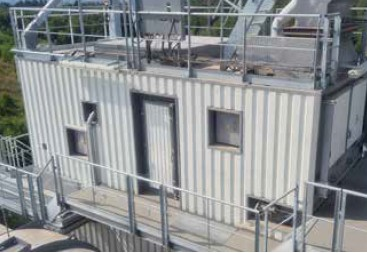
Abb. 42 Sichere Verkehrswege am/auf dem Siebdach
- Sorgen Sie dafür, dass das Siebdach und die angrenzenden Verkehrswege frei von Ablagerungen/Verschmutzungen sind, um bei jeder Witterung eine sichere und rutschfeste Oberfläche zu garantieren.
- Sorgen Sie dafür, dass alle Abdeckungen und Verkleidungen vollständig montiert bzw. verschlossen sind (Abb. 43).
Abb. 43 Geöffnete Schutzabdeckung über pneumatischen Schließzylindern
- Achten Sie darauf, dass die vom Anlagenhersteller vorgegebenen Höchsttemperaturen eingehalten werden.
- Achten Sie darauf, dass heiße Oberflächen abgedeckt sind oder ggf. Warnhinweise vorhanden sind (Abb. 44).
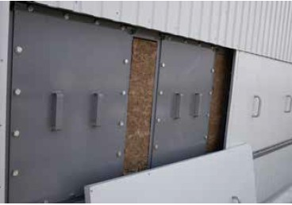
Abb. 44 Isolationsabdeckungen und Wartungsluken eines Heißsilos zum Schutz vor Kontakt mit heißen Oberflächen
- Stellen Sie sicher, dass vorhandene Absaugvorrichtungen des Siebgehäuses einwandfrei funktionieren.
- Abdichtungen sollten regelmäßig auf Verschleiß oder Beschädigungen geprüft und falls erforderlich ersetzt werden.
- Achten Sie darauf, dass die Wartungsöffnungen staubdicht verschlossen sind.
- Lassen Sie regelmäßig Sichtkontrollen an elektrischen Leitungen sowie pneumatischen Rohren und Schläuchen durchführen.
- Stellen Sie Ihren Beschäftigten geeignete persönliche Schutzausrüstung, wie z. B. Sicherheitsschuhe, Schutzhelm, Schutzbrille, Atemschutz, Schutzhandschuhe und ggf. Gehörschutz zur Verfügung und sorgen Sie dafür, dass diese getragen wird.
|
3.5.2 Verwiegen und Mischen von Mineralien, Bindemittel, Zuschlags- und Hilfsstoffen
Durch unterschiedliche Wiegeeinrichtungen werden das im Heißsilo zwischengelagerte Mineral sowie Bindemittel, Zuschlags- und Hilfsstoffe verwogen und anschließend gemäß Rezeptur dem Mischer zugeführt. Durch den Einsatz eines Mischers werden Mineralstoffe, Bindemittel, Zuschlags- und Hilfsstoffe zu fertigem Mischgut verarbeitet.
|
Weitere Informationen
|
- DGUV Information 203-079 "Auswahl und Anbringung von Verriegelungseinrichtungen"
- DGUV Information 203-087 "Auswahl und Anbringung von Schlüsseltransfersystemen"
- DGUV Information 213-054 "Maschinen – Sicherheitskonzepte und Schutzeinrichtungen"
- DIN EN 536:2016-01, Straßenbaumaschinen – Mischanlagen für Materialien zum Straßenbau – Sicherheitsanforderungen (EN 536:2015)
- Merkblatt T008-3 "Checklisten Maschinen – elektrische, hydraulische und pneumatische Ausrüstung" der BG RCI
- "Handbuch Gefährdungsbeurteilung Teil 2: Gefährdungsfaktoren" der BAuA, Kapitel 5.1 "Heiße Medien/Oberflächen"
|
|
Gefährdungen
|
|
Mineral-, Füller- und Faserwaage
- Kontakt mit heißen Oberflächen.
- Quetschen und Einklemmen zwischen beweglichen Bauteilen.
- Verletzungen durch heißes Mineralgemisch.
Bindemittelwaage
- Kontakt mit heißen Oberflächen.
- Quetschen und Einklemmen zwischen beweglichen Bauteilen.
- Verletzung durch heißes Bindemittel.
Mischer
- Erfasst werden vom Rührwerk.
- Einziehen, Quetschen und Einklemmen an beweglichen Teilen.
- Kontakt mit heißen Oberflächen.
- Heißes Bindemittel kann an der Auslauföffnung des Mischertrogs austreten.
- Verbrühungsgefahr durch Wasserdampf, insbesondere bei der Zugabe von Ausbauasphalt.
|
|
Maßnahmen
|
|
Mineral-, Füller und Faserwaage sowie Bindemittelwaage
Mischer
|
3.5.3 Zugabe von Faserstoffen, Zusätzen und Additiven
Faserstoffe werden zur Stabilisierung des Bindemittels beigemischt und verhindern ein Ablaufen des Bindemittels aus dem Mischgut. Die Zugabe kann z. B. mit Hilfe einer pneumatischen Fördereinrichtung, Zellenradschleusen oder Förderschnecken aus Silos oder Big Bags über die Wiegeeinrichtung in den Mischer erfolgen. Zur Herstellung von Asphaltmischgutarten und -sorten mit spezifischen Eigenschaften werden Zusätze und Additive mit verschiedenen chemischen und physikalischen Eigenschaften eingesetzt. Bei deren Anlieferung und Lagerung treten unterschiedliche Gefährdungen auf.
|
Weitere Informationen
|
- DGUV Information 213-054 "Maschinen – Sicherheitskonzepte und Schutzeinrichtungen"
- DIN EN 536:2016-01, Straßenbaumaschinen – Mischanlagen für Materialien zum Straßenbau – Sicherheitsanforderungen (EN 536:2015)
- "Leitmerkmalmethode zur Beurteilung von Heben, Halten, Tragen" der BAuA
|
|
Gefährdungen
|
- Quetschen, Einklemmen und Scheren zwischen beweglichen Bauteilen.
- Stolpern und Stürzen über Rohrleitungen.
- Arbeiten unter Staubbelastung.
- Brand- und Explosionsgefahr, wenn Faserstoffe aus der Faserstoffanlage austreten.
- Explosionsgefahr durch elektrostatische Entladungen, z. B. bei pneumatischer Förderung durch Kunststoffrohre.
- Getroffen werden von herabfallenden Lasten.
- Absturzgefahr bei Entleeren der Big Bags.
- Absturz- oder Quetschgefahr beim Transport der Palette auf die Zugabeebene.
- Verbrennungen durch die Dampfexpansion bei der Zugabe der Sackware in den Mischer.
- Schnittverletzungen beim Öffnen der Gebinde.
- Reizungen von Haut, Atemwegen und Schleimhäuten und Gefahr ernster Augenschäden durch z. B. Austreten von Additiven bei nicht ordnungsgemäß angeschlossenen Fördereinrichtungen, bei Reinigung von Rohrleitungen oder der Filteranlage, bei Probeentnahme.
- Gefährdung durch häufiges Heben und Tragen schwerer Lasten.
- Lärm-, Staub- und Vibrationsbelastung bei der manuellen Additiv-Zugabe (Sackzugabe in den Mischer).
|
|
Maßnahmen
|
- Stellen Sie sicher, dass Schutzabdeckungen beweglicher Teile vollständig und ordnungsgemäß montiert sind.
- Die Förderleitung sollte auf dem kürzesten Weg zur Zugabestelle in den Mischer verlaufen und keine Kreuzungen mit Verkehrswegen aufweisen.
- Beim Handling von Big Bags dürfen sich keine Personen unter den angehobenen Lasten aufhalten.
- Kontrollieren Sie Big Bags bei Materialanlieferung auf Beschädigungen im Gewebe, um einen unkontrollierten Materialaustritt zu vermeiden.
- Installieren Sie Bühnen zum sicheren Entleeren der Big Bags für die Faserzugabe (Abb. 48). Gestalten Sie die Arbeitsplätze, an denen mit Zusatzstoffen umgegangen wird so, dass keine Absturzgefahr besteht, z. B. mit dreiteiligem Seitenschutz.
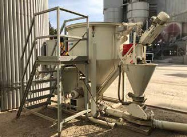
Abb. 48 Vorratsbehälter einer Faserstoffzugabe mit sicherem Podest zur Öffnung der Big Bags.
- Sorgen Sie dafür, dass bei der händischen Zugabe von staubförmigen Zusatzstoffen Beschäftigte nicht mit beweglichen Teilen des Zwangsmischers oder anderen maschinellen Anlagen in Kontakt kommen, z. B. mit einer Zugabeschleuse (Abb. 49).
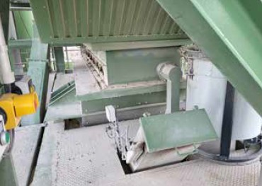
Abb. 49 Zugabeschleuse für Sackware mit abgesetztem Quittiertaster (linker Bildrand)
- Durch die Verknüpfung mit der Steuerung und zwei Klappen muss sichergestellt sein, dass eine Dampfexpansion aus dem Mischer nicht aus der Zugabeschleuse austreten kann.
- Achten Sie darauf, dass die Lagerbereiche für palettierte Sackware ausreichend tragfähig und gut zugänglich sind (Abb. 50).
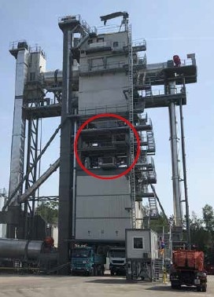
Abb. 50 Tragfähige Podeste für das Absetzen von Sackware
- Prüfen Sie anhand des Sicherheitsdatenblattes, ob eine Brandgefährdung möglich ist.
- Sorgen Sie dafür, dass keine Zündquellen vorhanden sind. Verhindern Sie elektrostatische Aufladungen in den Förderleitungen.
- Beschaffen Sie Hebehilfen, z. B. Tragegurte, Einhängegriffe und vermeiden Sie das regelmäßige Heben und Tragen von schweren Lasten (Beurteilung z. B. nach der Leitmerkmalmethode der BAuA).
- Stellen Sie für Notfälle schnell erreichbare Augenspüleinrichtungen zur Verfügung.
- Wird ein Zyklon verwendet, kann die Abluftleitung zum Beispiel in den Heißelevator geführt werden, um Stäube nicht ungehindert in die Atmosphäre gelangen zu lassen.
- Erstellen Sie für die Handzugabe von Additiven und Zusätzen eine Betriebsanweisung.
- Stellen Sie Ihren Beschäftigten persönliche Schutzausrüstung insbesondere dichtschließende Schutzbrillen z. B. Korbschutzbrillen, geeignete Schutzhandschuhe (schnittfest), bedeckende Kleidung und Atemschutzmaske (FFP2 mit Ausatemventil) zur Verfügung und sorgen Sie dafür, dass diese getragen wird.
|
3.6 Mischgutsilobeschickung und Mischgutsilo
Die Mischgutsilobeschickung umfasst den Bereich von der Mischerentleerung bis zum Befüllen der Mischgutsilos. Der Transport erfolgt über eine Verladeeinrichtung. Die Verladeeinrichtung ist in den meisten Fällen ein Verfahrkübel. Bei neben dem Mischer stehenden Mischgutsilos ist dieser als Schrägaufzug ausgebildet. Diese Elemente transportieren das Mischgut zu den unter oder neben dem Mischer stehenden Silos, in welchen es bis zur Abholung zwischengelagert wird. Über die Verschlussorgane der Silos, z. B. Klappen und Schieber, erfolgt die Verladung des Mischguts in die Fahrzeuge.
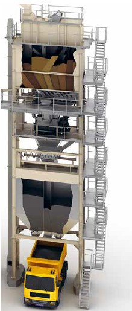
Abb. 51 Schematische Darstellung eines Mischturmes mit horizontal beweglichem Verfahrkübel
|
Weitere Informationen
|
- DGUV Information 203-087: "Auswahl und Anbringung von Schlüsseltransfersystemen"
- DGUV Information 213-054 "Maschinen – Sicherheitskonzepte und Schutzeinrichtungen"
- DIN EN 536:2016-01, Straßenbaumaschinen – Mischanlagen für Materialien zum Straßenbau – Sicherheitsanforderungen (EN 536:2015)
- "Handbuch Gefährdungsbeurteilung Teil 2: Gefährdungsfaktoren" der BAuA, Kapitel 5.1 "Heiße Medien/Oberflächen"
|
|
Gefährdungen
|
- Verbrennungsgefahr durch heiße Oberflächen und Dämpfe.
- Quetsch- und Schergefahr durch freiwerdende Energie an Klappen, Schiebern und an Verladeeinrichtungen.
- Heißes Bindemittel und Mischgut kann an der Auslauföffnung der Kleckerklappe austreten.
- Verbrühungsgefahr durch Wasserdampf oder Bitumendämpfe, insbesondere bei der Zugabe von Asphaltgranulat.
- Getroffen werden von gerissenen Zugseilen.
- Gequetscht werden durch bewegten Verfahrkübel.
- Hineinstürzen in das Mischgutsilo.
- Getroffen werden von Heißmischgut unter dem Mischgutsilo.
- Verbrennungen durch heiße Oberflächen und heiße Atmosphäre bei der Störungsbeseitigung.
|
|
Maßnahmen
|
- Stellen Sie sicher, dass Schutzabdeckungen für bewegliche Teile und Antriebsorgane funktionsfähig und ordnungsgemäß montiert sind.
- Stellen Sie sicher, dass die Mischgutsilobeschickung mit einer Bereichssicherung ausgestattet ist und nur über eine elektrisch verriegelte Zugangstür erreichbar ist (Abb. 52 und 53).
- Achten Sie darauf, dass der Aufenthalt im Gefahrbereich des Verfahrkübels nicht möglich ist. Muss der Bereich zur Störungsbeseitigung betreten werden, ist auf korrekt angelegte PSA zu achten, da die Gefahr besteht, dass man mit Mischgut oder Bindemittel in Kontakt kommt.
- Sorgen Sie dafür, dass bei Anlagen mit Schrägaufzug der Bereich der Kübelbefüllung gegen Betreten und Befahren gesichert ist. Für den Betriebszustand der Direktverladung müssen der Kübel und die angehobene Kübelbahnschiene gegen Bewegung gesichert sein. Als Sicherung für die Zufahrt eignen sich Schranken oder Lichtschranken.
- Elektrische Leitungen sowie pneumatische Rohre und Schläuche müssen regelmäßig auf Beschädigungen kontrolliert werden.
- Vor der Störungsbeseitigung ist der Bereich strom- und drucklos zu schalten. Schieber und Klappen sind zusätzlich mechanisch zu sichern.
- Die Fehlersuche im Bereich des Verfahrkübels muss nach Möglichkeit von außerhalb des Gefahrbereiches bei geschlossenen Schutzeinrichtungen erfolgen. Der Gefahrbereich darf dabei nicht betreten werden. Hilfreich ist eine außerhalb des Gefahrbereichs angebrachte Vor-Ort-Steuerung (Abb. 53).
- Achten Sie darauf, dass die als Absturzsicherung im Einlauf der Mischgutsilos installierten Gitter fest angebracht sind und regelmäßig auf Verschleiß kontrolliert werden.
- Die Störungsbeseitigung im Bereich der Siloauslaufklappen muss von außerhalb des Gefahrbereiches erfolgen. Des Weiteren muss der Bereich gegen unbefugtes Betreten/Befahren gesichert werden.
- Vor der Störungsbeseitigung einer Auslaufklappe ist die Klappenheizung auszuschalten. Die Anlagenteile müssen ausreichend abgekühlt sein.
- Bereiche, die zur Störungsbeseitigung betreten werden müssen, sind vor Beginn der Arbeiten ausreichend zu lüften. Hierfür sind z. B. Lüftungsklappen zur Querlüftung geeignet.
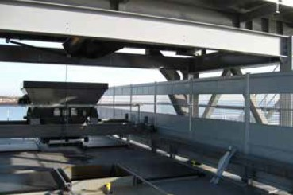
|
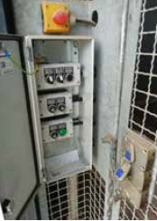
|
Abb. 52 Bereichssicherung für den Verfahrkübel |
Abb. 53 Schlüsseltransfersystem und Vor-Ort-Steuerung |
Beste Praxis
Eine sichere Möglichkeit zur Beseitigung von Stopfern im Auslauf des Mischgutsilos sind Dorne, welche auf die Gabeln vom Stapler oder Radlader montiert werden (Abb. 54). Auf diese Weise wird die Gefahr, dass Beschäftigte von herabfallendem Mischgut getroffen werden, verhindert.
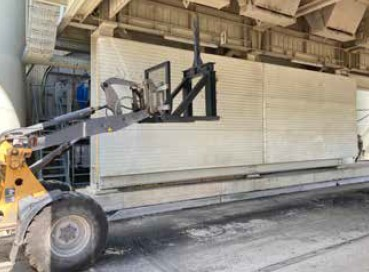
Abb. 54 Dorn zum Stochern als Anbauvorrichtung für Radlader mit Gabelausrüstung
|
3.7 Ausbauasphalt
3.7.1 Aufbereitung von Ausbauasphalt
Ausbauasphalt wird zur Schonung der natürlichen Ressourcen verstärkt bei der Herstellung von frischem Asphaltmischgut eingesetzt. Das Material wird von den Straßenbaustellen in Form von Schollenmaterial oder als Fräsgut an die Asphaltmischanlagen geliefert. Der so gezielt gewonnene Ausbauasphalt sollte entsprechend dem vorgesehenen Verwendungszweck getrennt gelagert werden. Zur Weiterverarbeitung wird er vorwiegend in mobilen Brech- und Klassieranlagen aufbereitet. Diese sind teilweise mit Magnetabscheidern ausgerüstet.
|
Weitere Informationen
|
- DGUV Information 203-043 "Beeinflussung von Implantaten durch EMF"
- Praxishandbuch "Arbeitssicherheit und Gesundheitsschutz in der Baustoffindustrie" der BG RCI, Kapitel C 4.2 und C 4.3
- DIN EN 1009-1:2021-01, Maschinen für die mechanische Aufbereitung von Mineralien und ähnlichen festen Stoffen – Sicherheit – Teil 1: gemeinsame Anforderungen für Aufbereitungsmaschinen und -anlagen
|
|
Gefährdungen
|
- An- und Überfahren von Personen durch mobile Geräte und beim Einrichten der Baustelle.
- Abstürzen bei Montagearbeiten an der Anlage.
- Ab- und Umsturz der mobilen Geräte bei der Beschickung des Aufgabetrichters.
- Getroffen werden
| –
| durch unkontrollierte Bewegungen bei der Positionierung und Abstützung der mobilen Aufbereitungsanlagen
|
| –
| von Bauteilen, die auf der Baustelle mittels Erdbaumaschinen im Hebezeugbetrieb montiert werden
|
| –
| von herausgeschleudertem Material aus dem Brecher
|
- Verletzungen durch die Bewegung der Brechwerkzeuge bei der Störungsbeseitigung im Brecher.
- Einzugsgefahr an Förderbändern.
- Gefahren durch elektrischen Strom bei unzureichender Erdung der Anlage.
- Gefährdung durch elektromagnetische Felder (Magnetabscheider).
- Staublungenerkrankungen durch Quarzfeinstaub.
- Gehörschäden durch Lärm, z. B. an Sieben, Brechern und deren Antriebsaggregaten.
|
|
Maßnahmen
|
- Sorgen Sie dafür, dass sich während des Betriebes keine unbefugten Personen im Gefahrenbereich aufhalten, z. B. durch das Anbringen von Absperrungen, Beschilderungen, Markierungen.
- Sorgen Sie bei der Montage für sichere Arbeitsplätze in der Höhe.
- Schutzeinrichtungen, Laufstege und Wartungsbühnen sind vor der Inbetriebnahme wieder komplett zu montieren und auf Vollständigkeit und Funktion zu überprüfen.
- Sorgen Sie dafür, dass für die Materialaufgabe Rampen vorhanden sind, die ein Um- oder Abstürzen der Erdbaumaschinen verhindern (Abb. 55).
Abb. 55 Materialaufgabe mit Bagger von sicherer Standfläche
- Bei der Montage der mobilen Anlage dürfen nur Erdbaumaschinen im Hebezeugbetrieb eingesetzt werden, die dafür ausgerüstet sind und für die eine entsprechende Herstellerbescheinigung vorliegt.
- Lastaufnahme- und Anschlagmittel sind den Einsatzbedingungen angepasst auszuwählen und vorzuhalten.
- Beim Verfahren, Positionieren und Abstützen der mobilen Anlage darf sich niemand im Gefahrbereich aufhalten.
- Sorgen Sie mit technischen Maßnahmen dafür, dass das Herausschleudern von Material aus dem Brecher verhindert wird, z. B. durch Kettenvorhänge (Abb. 56).
Abb. 56 Kettenvorhang gegen Herausschleudern von Material
- Sollte ein Material zu Brückenbildung neigen, installieren Sie geeignete technische Maßnahmen zur automatischen Beseitigung der Materialbrücken, z. B. Rüttler.
- Sorgen Sie dafür, dass Einzugsstellen an Förderbändern mit Schutzeinrichtungen gesichert sind (Abb. 57).
Abb. 57 Gut gesichertes Austragsband der mobilen Anlage
- Bei der Störungsbeseitigung sind die Abzugseinrichtungen und Förderbänder oder ggfs. die gesamte Anlage abzuschalten und gegen Wiedereinschalten zu sichern.
- Bei Anlagen mit Motor-Generator-Antrieb muss die Anlage mit einem Staberder geerdet werden.
- Informieren Sie Ihre Beschäftigten über Gefahren durch starke magnetische Felder bei Einsatz von Magnetabscheidern. Personen mit Herzschrittmacher dürfen nicht in deren Nähe arbeiten. Kennzeichnen Sie den Gefahrenbereich.
- Setzen Sie technische Maßnahmen zur Staubreduzierung ein.
- Statten Sie die Fahrerkabine mobiler Geräte mit Klimaanlagen und ausreichend dimensionierten Filteranlagen aus.
- Sorgen Sie dafür, dass Lärmbereiche gekennzeichnet sind.
- Stellen Sie Ihren Beschäftigten persönliche Schutzausrüstung wie Sicherheitsschuhe, Schutzhelm, Schutzbrille, geeignete Schutzhandschuhe und ggf. Gehörschutz zur Verfügung und sorgen Sie dafür, dass diese getragen wird.
|
3.7.2 Zugabe von Ausbauasphalt zum Mischprozess
Der aufbereitete Ausbauasphalt wird meist mit einem Radlader aufgenommen und über einen Recycling-Doseur (RC-Doseur) der Asphaltmischanlage zugeführt. Von dort wird das Material über Fördereinrichtungen, z. B. Förderbänder, Becherwerke weiter transportiert. Das Material wird häufig in Paralleltrommeln separat getrocknet und erhitzt. Es kann dem Mischer aber auch direkt kalt zugeführt werden.
|
Weitere Informationen
|
- DGUV Information 213-054 "Maschinen – Sicherheitskonzepte und Schutzeinrichtungen"
- DIN EN ISO 14122-1:2016-10, Sicherheit von Maschinen – Ortsfeste Zugänge zu maschinellen Anlagen – Teil 1: Wahl eines ortsfesten Zugangs und allgemeine Anforderungen (ISO 14122-1:2016)
- "Wiederverwenden von Asphalt" des Deutscher Asphaltverband e.V.
- "Handbuch Gefährdungsbeurteilung Teil 2: Gefährdungsfaktoren", Kapitel 5.1 "Heiße Medien/Oberflächen" der BAuA
|
|
Gefährdungen
|
- Quetsch- und Einzugsgefahr an den bewegten Teilen der Paralleltrommel und deren Antrieben und Stützrollen sowie zwischen Trommel und Stirnwand.
- Absturzgefahr auf dem Brennerpodest und der Wartungsöffnung der Paralleltrommel.
- Gefährdung durch Dampfschwaden bei der Zugabe von feuchtem Ausbauasphalt in den Mischer (Dampfschlag).
- Brandgefahr in Paralleltrommel und Zuführband.
- Gefährdung durch heiße Oberflächen und heiße Atmosphäre bei der Störungsbeseitigung.
- Stolpern und Stürzen bei Kontrollgängen.
- Einwirkung von Lärm.
Diese Gefährdungen können Sie mit folgenden Maßnahmen reduzieren:
|
|
Maßnahmen
|
- An der Paralleltrommel sind alle Einzugsstellen z. B. von Antrieben, Wellen, Kupplungen, Ketten durch Verkleidungen oder andere Schutzeinrichtungen zu sichern.
- Sorgen Sie für sichere hochgelegene Arbeitsplätze, z. B. Bühnen mit Geländer und einem sicheren Aufstieg (Abb. 58 und 59).
Abb. 58 Sichere Verkehrswege an hochgelegener Paralleltrommel
Abb. 59 Sichere Verkehrswege am Becherwerkskopf und abgedeckte Übergaberinne in die Paralleltrommel
- Beim Beobachten der Brennflamme durch Schaulöcher ohne Schutzglas sind ein Helm mit hitzebeständigem Gesichtsschutz und Schutzhandschuhe zu benutzen.
- Organisieren Sie eine regelmäßige Prüfung und Wartung des Brenners.
- Beim Umgang mit unterschiedlichen Brennstoffen sind deren spezifische Eigenschaften zu berücksichtigen. Ein ungewollter Brennstoffaustritt ist zu verhindern.
- Lagern Sie den aufbereiteten Ausbauasphalt so, dass er vor Witterung (Regen, Schnee) geschützt ist (Abb. 60).
Abb. 60 überdachte Materialhalde
- Sorgen Sie für eine vollständige Abdeckung der Förderbänder für den Transport von Kalt-Asphaltgranulat in den Mischer, um eine Durchfeuchtung durch Witterungseinflüsse zu verhindern (Abb. 61).
Abb. 61 Abgedecktes Förderband für die Zugabe von Asphaltgranulat in den Mischer über Kaltzugabe
- Installieren Sie Expansionsrohre am Mischer mit Austrittsöffnungen in einen ungefährlichen Bereich und kontrollieren Sie diese regelmäßig auf freien Durchgang (Abb. 62).
Abb. 62 Expansionsrohr zur Ableitung des Dampfstoßes vom Mischer zur Entstaubungsanlage.
- Legen Sie Maßnahmen fest, um die Entstehung eines Brandes in der Paralleltrommel zu erkennen und zu bekämpfen z. B. Sensorik zur Temperaturerkennung, Abschottung der Trommel, Zugabe von Weißmaterial.
- Halten Sie Verkehrswege frei und beseitigen Sie Stolperstellen.
- Sorgen Sie für ausreichende Beleuchtung im Arbeits- und Verkehrsbereich.
- Stellen Sie Ihren Beschäftigten persönliche Schutzausrüstung wie Sicherheitsschuhe, Schutzhelm, Schutzbrille, geeignete Schutzhandschuhe und ggf. Gehörschutz zur Verfügung und sorgen Sie dafür, dass diese getragen wird.
|
3.8 Leitstand, Verladen und Waage
In den Asphaltmischanlagen wird der gesamte Ablauf durch den Anlagenführer gesteuert. Hierzu zählen im Wesentlichen die folgenden Aufgaben: das Starten und Hochfahren der Anlagen sowie Kontrollgänge in der Anlage und auf dem Betriebsgelände.
Abb. 63 und 63a Moderner Steuerstand im Asphaltmischwerk mit höhenverstellbarem Tisch
Für Anlagen führende Personen in einer Asphaltmischanlage kommt erschwerend hinzu, dass sie häufig zusätzlich für folgende Vorgänge zuständig sind:
- Disposition der Fahrzeuge
- Disposition der Ausgangsstoffe
- Koordination der Beschickung der Anlage
- Beladen der LKW
- Annahme von Ausbauasphalt
- Umgang mit Kunden, Baustellen
- Wartung, Pflege und Reinigung der Anlage
- Umgang mit Störungen und deren Beseitigung
Ein großes Problem stellt die teilweise hohe psychische Belastung durch die geforderte räumliche und zeitliche Flexibilität der Einsatzzeit der Beschäftigten dar.
|
Gefährdungen
|
- Psychische Belastung durch Informationsflut, Kommunikationsprobleme, z. B. mit Mitarbeitenden, Kundschaft, Lieferanten, Fahrerinnen und Fahrern.
- Psychische Belastung durch unregelmäßige Arbeitszeiten, Überstunden, unvorhersehbare Störungen und Schichtarbeit.
- Stolpern, Stürzen auf Verkehrswegen, z. B. durch Unebenheiten, Glatteis oder Nässe.
- Getroffen werden von herabfallenden Gegenständen, z. B. von heißem Mischgut oder Gesteinskörnungen.
- Gequetscht werden durch bewegten Verfahrkübel.
- Verletzungen z. B. durch heiße Massen und Oberflächen.
- Angefahren werden auf dem Betriebsgelände.
- Belastungen durch ungünstige Ergonomie des Arbeitsplatzes, z. B. der Bildschirmarbeitsplätze.
- Lärm durch z. B. Mischanlage, Fahrzeuge.
- Hohe Temperaturen in der Kabine durch Elektroschalteinrichtungen und Sonneneinstrahlung.
- Elektrische Gefährdung durch z. B. geöffnete Schaltschränke.
- Anstoß- und Stoßgefährdung z. B. bei Kontrollgängen.
- Gesundheitsgefährdung durch Temperaturwechsel zwischen Aufenthalt in der Steuerkabine oder den Heißbereichen in der Anlage und dem Außenbereich in der kalten Jahreszeit.
- Staubbelastung.
Diese Gefährdungen können Sie mit folgenden Maßnahmen reduzieren:
|
3.9 Instandhaltungsarbeiten
Häufige Unfallursache bei Instandhaltungsarbeiten ist eine unzureichende Planung. Daher müssen die Arbeiten sorgfältig geplant werden und für die jeweiligen Arbeiten qualifiziertes Personal eingesetzt werden. Insbesondere sind die Verwendung von geeignetem Material und Werkzeug und die Koordination und die Information aller Betroffenen zu gewährleisten. Durch vorbeugende Instandhaltungsmaßnahmen können Sie unvorhergesehene Störungen reduzieren.
3.9.1 Organisation von Instandhaltungsarbeiten
Um Instandhaltungsarbeiten sicher durchzuführen ist eine vorherige gute Planung, Vorbereitung und Organisation notwendig. Sofern mehrere Personen oder Gewerke beteiligt sind, sind die Arbeiten aufeinander abzustimmen. Gegebenenfalls ist ein Koordinator zu bestimmen.
|
Weitere Informationen
|
- DGUV Information 208-018 "Stetigförderer für Schüttgut"
- DGUV Information 209-015 "Instandhaltung – sicher und praxisgerecht durchführen"
- DGUV Information 213-022 "Beurteilung von Hitzearbeit"
- DIN EN 536:2016-01, Straßenbaumaschinen – Mischanlagen für Materialien zum Straßenbau – Sicherheitsanforderungen (EN 536:2015)
- DIN EN ISO 14122-1:2016-10, Sicherheit von Maschinen – Ortsfeste Zugänge zu maschinellen Anlagen – Teil 1: Wahl eines ortsfesten Zugangs und allgemeine Anforderungen (ISO 14122-1:2016)
- Merkblatt A016 "Sieben Schritte zum Ziel, Anhang 4: Sicherheitscheck vor Ort" der BG RCI
|
|
Gefährdungen
|
- Verletzungen und Gesundheitsschäden durch
| –
| ungenügende vorherige Vorbereitung der Arbeiten,
|
| –
| mangelnde Koordination zwischen den Beteiligten,
|
| –
| improvisiertes Arbeiten,
|
| –
| ungeprüfte Arbeitsmittel,
|
| –
| nicht bestimmungsgemäße Verwendung von Arbeitsmitteln,
|
| –
| Einwirkungen von Staub.
|
|
3.9.2 Instandhaltungsarbeiten an Fördereinrichtungen
In Asphaltmischanlagen werden große Mengen an Schüttgut und Ausgangsstoffen durchgesetzt, die dem Prozess über Fördereinrichtungen zugeführt werden. Dadurch sind die Anlagen großem Verschleiß ausgesetzt. Die erforderlichen Instandhaltungsarbeiten müssen oft unter erschwerten Bedingungen, wie z. B. Arbeiten unter Absturzgefahr, oder an heißen Oberflächen durchgeführt werden.
Im Folgenden werden die auftretenden Gefährdungen und Maßnahmen für die einzelnen Komponenten der Gesamtanlage behandelt:
- Bandanlagen
- Becherwerke
- Förderschnecken
- Zellradschleuse
- Kübelbahn
- Pumpen
|
Weitere Informationen
|
- DGUV Information 208-018 "Stetigförderer für Schüttgut"
- DGUV Information 209-015 "Instandhaltung – sicher und praxisgerecht durchführen"
- DGUV Information 213-022 "Beurteilung von Hitzearbeit"
- DIN EN 536:2016-01, Straßenbaumaschinen – Mischanlagen für Materialien zum Straßenbau – Sicherheitsanforderungen (EN 536:2015)
- DIN EN ISO 14122-1:2016-10, Sicherheit von Maschinen – Ortsfeste Zugänge zu maschinellen Anlagen – Teil 1: Wahl eines ortsfesten Zugangs und allgemeine Anforderungen (ISO 14122-1:2016)
- Merkblatt A016 "Sieben Schritte zum Ziel, Anhang 4: Sicherheitscheck vor Ort" der BG RCI
- Merkblatt T 058 "Öffnen von Rohrleitungen" der BG RCI
- KB 034 "Gurtbandförderer für Schüttgüter – Schutzmaßnahmen für die sichere Gestaltung" der BG RCI
- KB 035 "LOCKOUT/TAGOUT – Sicherheit bei der Instandhaltung – mit System" der BG RCI
- "Handbuch Gefährdungsbeurteilung Teil 2: Gefährdungsfaktoren", Kapitel 5.1 "Heiße Medien/Oberflächen" der BAuA
|
|
Gefährdungen
|
|
Förderbänder
- Verletzungsgefahr durch unerwarteten Anlauf der Bandanlage während der Instandhaltung und bei Einstellarbeiten an der laufenden Bandanlage
- Absturzgefahr bei Schrägbändern (auch hochliegenden Bändern)
- Schnittgefahr durch abgefahrene Tragrollen und Leitbleche
- Einzugsgefahr bei Reinigungsarbeiten (am laufenden Band)
- Quetsch- und Scherstellen insbesondere an Einzugsstellen von Förderbändern
Becherwerke
- Stolpern und Stürzen
- Austretendes Fördergut
- Mechanische Gefährdung durch Förderketten und Becher
- Quetsch- und Scherstellen insbesondere an Spannstellen
- Absturzgefahr bei Arbeiten am Becherwerkskopf
- Verbrennungsgefahr an heißen Oberflächen
- Verletzungsgefahr durch Eingreifen in Revisionsluken
Förderschnecken
- Verbrennungsgefahr an heißen Oberflächen
- Verletzung durch Eingreifen in den Schneckentrog/Rohrschnecke
- Quetschgefahr durch unerwarteten Anlauf des Antriebs
Zellradschleusen
- Quetschgefahr beim Eingreifen
- Quetschgefahr durch plötzlichen Anlauf des Antriebs
- Verschüttungs- und Verbrennungsgefahr durch austretenden (heißen) Füller
Kübelbahn
- Verletzung durch Eigenbewegung des Kübels
- Quetschgefahr durch das Schließen der Auslaufklappe (federbelastet oder pneumatisch)
- Verbrennungsgefahr durch heiße Oberfläche des Kübels
- Gefährdung durch Hitze bei Arbeiten über den Vorratssilos
- Absturzgefahr
- Verletzung durch herabfallendes Material
Pumpen und Rohrleitungen für Bindemittel
- Verbrennungsgefahr durch heiße Medien und Oberflächen
- Verletzungsgefahr durch Austreten von unter Druck stehenden Medien
- Gefahr durch elektrischen Schlag
- Brandgefahr
Pumpen und Rohrleitungen für Heizöl
- Verletzungsgefahr durch Austreten unter Druck stehender Medien
- Gefahr durch elektrischen Schlag
- Brandgefahr
Diese Gefährdungen können Sie mit folgenden Maßnahmen reduzieren:
|
|
Maßnahmen
|
|
Förderbänder
Becherwerk
Sorgen Sie dafür, dass
Förderschnecken
Sorgen Sie dafür, dass
- alle Schnecken eine Netztrenneinrichtung haben und diese vor Instandhaltungsarbeiten abgeschaltet und gegen Wiedereinschalten gesichert werden.
- heiße Oberflächen isoliert oder gekennzeichnet sind.
Zellradschleusen
Stellen Sie sicher, dass
- oberhalb der Zellradschleuse anstehendes Material nicht auslaufen und zu Verschüttungen führen kann, z. B. durch Leerfahren des Silos oder durch ein zusätzliches Absperrorgan.
- die Antriebe vor Beginn der Instandhaltungsarbeiten sicher abgeschaltet und gegen Wiedereinschalten gesichert werden.
Kübelbahn
Sorgen Sie dafür, dass
Pumpen für Bindemittel und Heizöl
Sorgen Sie dafür, dass ausreichend Absperr- und Entleereinrichtungen vorhanden sind, um den Flüssigkeitsstrom für Wartungsarbeiten zu allen Seiten der Ausrüstung zu unterbrechen (z. B. vor und hinter Pumpen, an Behältern).
Weisen Sie Ihre Beschäftigten darauf hin, dass
- Rohrleitungen und Behälter vor Beginn der Instandhaltungsarbeiten abgesperrt und ggf. entleert werden müssen,
- bei Arbeiten an Bindemittelpumpen und Rohrleitungen Verbrennungsgefahr besteht und möglicherweise heiße Bindemittel austreten können,
- Heißarbeiten wegen der Brandgefahr nur mit Erlaubnisschein und an erkalteten Systemen durchgeführt werden.
|
3.9.3 Instandhaltungsarbeiten in und an Silos und Behältern
Instandhaltungsarbeiten sind auch mit dem Einsteigen oder Einfahren in Silos und Behälter verbunden. Hier sind besondere Gefahren vorhanden.
Folgende Anlagenkomponenten werden unterschieden:
- Mineraldoseure
- Füllersilos
- Heißsilierung
- Mischgutsilos
- BKS-Silo
- Waagen
- Bindemitteltanks
- Heizöltank
- Druckbehälter
|
Gefährdungen
|
|
Grundsätzlich können bei Instandhaltungsarbeiten in Silos und Behältern folgende Gefährdungen auftreten:
- vom Füllgut getroffen oder verschüttet werden,
- gequetscht werden in den Austragseinrichtungen und Fördereinrichtungen,
- Verletzungen durch unkontrolliert austretendes Material, z. B. Füller,
- Absturzgefahr,
- elektrische Gefährdung durch die Benutzung von ungeeignetem Werkzeug in engen Räumen,
- gesundheitsgefährdende Atmosphäre im Silo, z. B. durch Sauerstoffmangel oder Schweißrauche,
- Gesundheitsschädigung durch Messeinrichtungen im Silo, z. B. durch ionisierende Strahlung oder elektromagnetische Felder,
- erhöhte Lärm- und Staubeinwirkung,
- Verletzung durch schlechte Sichtverhältnisse aufgrund von Dunkelheit und Staub,
- Verbrennung durch nicht ausreichend abgekühlte Oberflächen sowie durch heißes Material,
- erschwerte Bedingungen für Rettung und Erste Hilfe.
Darüber hinaus treten an einigen Komponenten der Asphaltmischanlagen weitere Gefährdungen bei Instandhaltungsarbeiten auf:
Mineraldoseur
- Eingezogen werden und versinken im Schüttgut durch z. B. Einstürzen von Hohlräumen, Abziehen des Schüttgutes.
Füllersilos
- Verätzungsgefahr durch Kalkhydrat
Heißsilierung
- Quetschgefahr an den Auslaufklappen
- Gesundheitsgefahr durch silikogene Stäube
- Ionisierende Strahlung
Mischgutsilos
- getroffen werden von herabfallenden Schollen:
| –
| im Silo oder
|
| –
| durch geöffnete Verschlüsse
|
- Quetschgefahr an den Auslaufklappen
- Verbrennungsgefahr durch beheizte Auslaufklappen
BKS-Silos
- Schwelbrände
- Kohlenstaubexplosionen
Mineralwaage
- Quetschgefahr an den Auslaufklappen
- Gesundheitsgefahr durch silikogene Stäube
Füllerwaage
- Quetschgefahr an der Austragsschnecke
- Gesundheitsgefahr durch silikogene Stäube
- Verätzungsgefahr durch Kalkhydrat
Heizöltanks
- Brandgefahr
- Gesundheitsgefahr durch unter Druck austretendes Heizöl
Bindemitteltanks
- Gesundheitsgefährdung durch austretende Dämpfe und Gase (z. B. Schwefelwasserstoff).
- Absturzgefahr vom Tank und in den Tank durch den Einstiegsdeckel.
- Schwere Verbrennungen bei
| –
| Kontakt mit heißem Medium, wenn z. B. Temperaturfühler bei Revisionsarbeiten herausgenommen werden (Tauchfühler, z. B. verletzte Hülse),
|
| –
| Kontakt mit heißen Oberflächen,
|
| –
| beim Austreten von heißem Thermalöl.
|
- Entzündung des Bitumens bei Erhitzen über den Flammpunkt hinaus oder durch offene Flamme.
- Elektrischer Schlag bei Arbeiten an der elektrischen Heizung und direktem Kontakt mit stromführenden Teilen.
Druckbehälter
- Verletzungsgefahr durch gespeicherte Energie (wegfliegende Teile, Bersten des Behälters).
- Verletzungsgefahr durch unkontrolliert bewegte Leitungen oder Schläuche.
- Lärm beim Befüllen und Entleeren.
Diese Gefährdungen können Sie mit folgenden Maßnahmen reduzieren:
|
|
Maßnahmen
|
|
Bei Arbeiten in und an Silos und Behältern beachten Sie grundsätzlich Folgendes:
- Vermeiden Sie nach Möglichkeit Arbeiten im Silo.
- Sichern Sie Siloauslaufklappen gegen unbeabsichtigte Bewegung durch gespeicherte Energien, wie z. B. Druckluft (Abb. 69). Hierfür eignen sich auch mechanische Arretierungen (Abb. 70a oder 70b).
Abb. 69 Absperrhahn für Pneumatik mit Schloss
Abb. 70a Stahlseilsicherung einer Auslaufklappe
Abb. 70b Sicherung der Auslaufklappe mit Bolzen (Pfeil)
- Lassen Sie heiße Anlagenteile ausreichend lange abkühlen.
- Sorgen Sie dafür, dass bei Arbeiten in Silos und Behältern Personen nicht durch nachrutschendes Material verletzt werden. Anbackungen und Verstopfungen müssen zuvor beseitigt werden, zum Beispiel mit Beräumgeräten, Stangen oder Luftlanzen.
- Sind Arbeiten im Silo oder Behälter nicht zu vermeiden, dann müssen Sie einen Erlaubnisschein erstellen, der die folgenden wesentlichen Maßnahmen aufzeigt:
| –
| Für die Durchführung von Arbeiten in Silos und Behältern sind eine verantwortliche, aufsichtsführende Person sowie ein Sicherungsposten zu benennen.
|
| –
| Der Sicherungsposten muss ständig Kontakt zu dem Eingestiegenen halten und im Notfall Rettungsmaßnahmen einleiten.
|
| –
| Festlegung eines Rettungskonzepts vor Arbeitsbeginn,
|
| –
| Die Arbeiten sind von geeigneten und ausgebildeten Personen durchzuführen.
|
| –
| Gefahrstoffe in gefährlicher Konzentration in der Atmosphäre im Silo z. B. bei Schweiß- und Beschichtungsarbeiten, sind grundsätzlich auszuschließen.
|
| –
| Silos und Behälter sind ausreichend zu belüften, so dass der Sauerstoffgehalt dem der Umgebung entspricht. Bei geschlossenen Silos und Behältern ist die ausreichende Sauerstoffkonzentration und die Gefahrstoffkonzentration durch Freimessen zu überprüfen.
|
| –
| Sorgen Sie dafür, dass die Strahlenexposition so gering wie möglich ist und beachten Sie die Angaben des Herstellers der Füllstandsüberwachung.
|
| –
| Das im Silo oder Behälter befindliche Material ist so weit wie nötig auszutragen.
|
| –
| Befüll-, Auflockerungs-, Misch- und Abzugseinrichtungen sind abzuschalten und gegen Wiedereinschalten zu sichern.
|
| –
| Material und Gegenstände sind oberhalb der Einfahr-/Einstiegsöffnung vor dem Einsteigen/Einfahren zu entfernen.
|
| –
| Werkzeuge und Kleinteile dürfen nicht herabfallen.
|
| –
| Bei Arbeiten unter erhöhter elektrischer Gefährdung nur geeignete elektrische Betriebsmittel einsetzen (z. B. Trenntrafo oder Schutzkleinspannung, Schweißgeräte mit Leerlaufspannungsbegrenzung).
|
- Sorgen Sie dafür, dass bei Arbeiten oberhalb des Schüttguts (z. B. auf einer Bühne oder von einer Leiter)
| –
| keine Strickleitern benutzt werden,
|
| –
| nur PSA gegen Absturz verwendet wird, die einen Absturz auf das Schüttgut ausschließt. Als Rettungskonzept bietet sich eine Rettungshubeinrichtung an;
und
|
| –
| die Personen während des Einsteigens und während des Aufenthaltes im Silo bis zu ihrem Ausstieg mit einer Rettungshubeinrichtung durch ein straffes Seil gesichert sind.
|
- Sorgen Sie dafür, dass bei Arbeiten auf dem Schüttgut
| –
| wenn die Gefahr des Versinkens droht, unabhängig von der Einfahrtiefe eine Siloeinfahreinrichtung oder eine feste Arbeitsbühne benutzt wird (Abb. 71). Höhensicherungsgeräte dürfen nicht verwendet werden.
|
| –
| sich niemand unter anstehendem oder anhaftendem Material oder Schüttgut aufhält und Anbackungen und anhaftendes Füllgut gefahrlos von oben entfernt werden.
|
| –
| Personen, die sich auf dem Schüttgut bewegen, eine Siloeinfahrhose tragen, die mit einer Rettungshubeinrichtung verbunden ist.
|
Abb. 71 Siloeinfahreinrichtung und PSA gegen Absturz
- Beachten Sie die aktuellen Sicherheitsdatenblätter, technischen Merkblätter und erstellen Sie für die Arbeitsplätze und die Tätigkeiten mit den Gefahrstoffen Betriebsanweisungen.
- Stellen Sie Ihren Beschäftigten persönliche Schutzausrüstungen wie Sicherheitsschuhe, Schutzhelm, Schutzbrille, Atemschutz, PSA gegen Absturz, geeignete Schutzhandschuhe und ggf. Gehörschutz zur Verfügung und sorgen Sie dafür, dass diese getragen werden.
- Sorgen Sie bei schlechten Sichtverhältnissen für ausreichende Beleuchtung.
- Sehen Sie auf Silodächern mit Arbeitsplätzen Absturzsicherungen vor (Abb. 72).
Abb. 72 Silodach mit umlaufendem Geländer
- Achten Sie darauf, dass auf Silos Geländer mit mindestens 1,1 m hohem Handlauf, zwei Knieleisten und einer Fußleiste installiert sind.
- Steigleitern sind mit einer selbstschließenden Sicherungstür zu sichern.
- Sorgen Sie dafür, dass Steigleitern regelmäßig geprüft werden.
- Lassen Sie die persönlichen Schutzausrüstungen gegen Absturz regelmäßig prüfen.
Füllersilos
Mischgutsilos
- Weisen Sie die ausführenden Personen bei der Innenreinigung der Silos auf die Gefahr hin, die von sich lösenden Schollen ausgeht. Sorgen Sie dafür, dass kein Material auf Personen herabfallen kann. Sperren Sie ggfs. den Bereich unterhalb des Siloauslaufs ab.
Füller- und Mineralwaage
- Weisen Sie Ihre Beschäftigten auf die Verätzungsgefahr beim Einsatz von Kalkhydrat hin sowie auf weitere Gefährdungen durch andere Einsatzstoffe. Hinweise entnehmen Sie dem jeweiligen Sicherheitsdatenblatt.
- Bevor Sie Wartungsarbeiten an Wiegeeinrichtungen vornehmen, stellen Sie sicher, dass diese vollständig entleert sind.
- Sorgen Sie dafür, dass alle beweglichen Teile vor Aufnahme von Wartungsarbeiten elektrisch und pneumatisch getrennt werden.
- Stellen Sie sicher, dass auch vorgeschaltete Bauteile wie Pumpen, Förderschnecken oder Dosierverschlüsse des Heißsilos nicht versehentlich in Betrieb genommen werden.
- Teile der Wiegeeinrichtungen können kurz nach dem Betrieb sehr hohe Temperaturen aufweisen. Vor Aufnahme von Wartungsarbeiten sollte die Anlage ausgekühlt sein.
- Die Wiegeeinrichtung für Mineralien ist häufig durch eine Wartungsluke mit Deckel begehbar. Stellen Sie sicher, dass vor Betreten die Auslaufklappen geschlossen sind und ein unbeabsichtigtes Öffnen verhindert wird.
- Eine ausreichende Belüftung des Inneren der Waage hat zu erfolgen, um ein Ersticken oder Einatmen von Staub zu verhindern. Sorgen Sie dafür, dass die Mineralwaage nur unter Verwendung einer Atemschutzmaske betreten wird. Schließen Sie Alleinarbeit aus.
- Beim Austauschen von Verschleißschutzblechen können die aufgebrauchten Bleche sehr scharfkantig sein. Die Handhabung darf nur mit persönlicher Schutzausrüstung erfolgen.
BKS-Silo
Sorgen Sie dafür, dass Instandhaltungsarbeiten nur durch eine Fachfirma durchgeführt werden.
Bindemitteltanks
Stellen Sie sicher, dass
- vor Beginn der Arbeiten Behälter und Rohrleitungen nach Möglichkeit entleert werden oder das Bindemittel ausreichend abgekühlt wurde (die Heizung ist mit entsprechendem zeitlichem Vorlauf abzuschalten),
- Behälter und Rohrleitungen vor dem Öffnen drucklos gemacht werden,
- Dämpfe und Gase aus den Behältern und Rohrleitungen nach dem Öffnen ausgasen, bevor hierin oder hieran gearbeitet wird,
- ein sicherer Zugang zum Tankdeckel und dort eine regelgerechte Absturzsicherung vorhanden ist,
- eine Sicherheitseinrichtung im Behälterdeckel das Hineinstürzen verhindert,
- dichtschließende hitzebeständige Schutzkleidung, Handschuhe, Schutzbrille und erforderlichenfalls Visier zur Verfügung stehen und dass Ihre Mitarbeitenden diese benutzen,
- heiße Oberflächen nach Beendigung der Tätigkeiten wieder mit Schutzeinrichtungen gegen Verbrennungsgefahr ausgestattet werden,
- Arbeiten an der elektrischen Heizung nur von Elektrofachkräften oder Fachfirmen ausgeführt werden,
- bei Arbeiten an der Thermalölheizung zusätzlich zur oben erwähnten PSA eine Augenspülflasche zur Erstversorgung bereitgestellt wird.
Heizöltanks
Druckbehälter
Sorgen Sie dafür, dass
- sämtliche Anlagenbauteile regelmäßig einer Sichtprüfung unterzogen werden,
- Druckbehälter und druckbelastete Anlagenteile regelmäßig gemäß Betriebssicherheitsverordnung geprüft werden,
- Arbeiten an Behälter und Anlagenteilen nur in drucklosem Zustand durchgeführt werden,
- Ihre Beschäftigten Gehörschutz tragen, wenn Druckbehälter befüllt oder entleert werden.
|
3.9.4 Instandhaltungsarbeiten an Trockentrommel, Paralleltrommel, Brenner, Filteranlage, Mischer und Faserzugabe
Da die Instandhaltungsarbeiten an diesen Anlagenteilen oft unter Absturz- und Quetschgefahr ausgeführt werden, sind hier besondere Maßnahmen erforderlich.
|
Weitere Informationen
|
- DGUV Information 203-004 "Einsatz von elektrischen Betriebsmitteln bei erhöhter elektrischer Gefährdung"
- DGUV Information 209-015 "Instandhaltung – sicher und praxisgerecht durchführen"
- DIN EN 536:2016-01, Straßenbaumaschinen – Mischanlagen für Materialien zum Straßenbau – Sicherheitsanforderungen (EN 536:2015)
- DIN EN ISO 14122-1:2016-10, Sicherheit von Maschinen – Ortsfeste Zugänge zu maschinellen Anlagen – Teil 1: Wahl eines ortsfesten Zugangs und allgemeine Anforderungen (ISO 14122-1:2016)
- KB 035 "LOCKOUT/TAGOUT – Sicherheit bei der Instandhaltung – mit System" der BG RCI
|
|
Gefährdungen
|
|
Allgemein
- Gefährdungen durch Arbeiten in engen Räumen
- Erhöhte elektrische Gefährdung
- Absturzgefahr
- Brandgefahr bei Heißarbeiten
Trockentrommel, Paralleltrommel und Brenner
- Verbrennungsgefahr durch heiße Oberflächen
- Gefährliche Atmosphäre bei Schweiß- und Brennarbeiten
- Erstickungsgefahr
- Sturzgefahr durch unbeabsichtigtes Drehen der Trommel in Folge einer Unwucht
- Quetschgefahr an den Antriebselementen der Trommel
- Gesundheitsgefahr durch silikogenen Staub
- Stolper- und Sturzgefahr durch die Einbauten
- Getroffen werden von herabfallenden Anhaftungen der Trommelwand (Paralleltrommel)
- Schnittgefahr durch scharfkantige Einbauten
- Brand- und Explosionsgefahr
Filteranlage
- Quetschgefahr durch Schneckentrog
- Quetschgefahr am Lüfterrad
- Gesundheitsgefahr durch silikogene Stäube
Mischer
- Verbrennungsgefahr an heißen Oberflächen
- Quetsch- und Absturzgefahr an der Austragsöffnung
- Verschüttet oder getroffen werden von Material im Mischer
- Quetschgefahr an Ketten-/Riementrieben
- Gefährliche Atmosphäre bei Schweiß- und Brennarbeiten
- Verletzung durch Eigenbewegung der Mischwerkzeuge
- Schnittverletzungen durch scharfe Kanten
Faserzugabe
- Schwere Verletzungen durch unkontrollierten Anlauf von Zellenradschleusen oder Gebläse-Ventilatoren
Diese Gefährdungen können Sie mit folgenden Maßnahmen reduzieren:
|
|
Maßnahmen
|
- Sorgen Sie dafür, dass Maschinen und Anlagen sicher abgeschaltet und gegen Wiedereinschalten gesichert sind. Beachten Sie dabei alle Energieformen und auch Restenergien.
- Stellen Sie sicher, dass bei Instandhaltungsarbeiten in Behältern und engen Räumen
| –
| die Behälter ausreichend belüftet werden, wenn im Inneren gearbeitet wird.
|
| –
| bei staubenden Arbeitsgängen Atemschutz (mindestens FFP2) getragen wird.
|
| –
| dass alle Oberflächen ausreichend lange auskühlen.
|
| –
| Maßnahmen gegen erhöhte elektrische Gefährdung getroffen werden (z. B. Trenntrafo, Schutzkleinspannung oder Personenschutzschalter).
|
- Treffen Sie Maßnahmen des vorbeugenden Brandschutzes, z. B.:
| –
| Brandlasten entfernen oder abdecken
|
| –
| Löschmittel bereitstellen
|
| –
| Brandwache festlegen
|
- Sorgen Sie für geeignete Maßnahmen gegen Absturzgefahr.
- Stellen Sie sicher, dass bei Instandhaltungsarbeiten an Trockentrommel, Paralleltrommel und Brenner
| –
| die Bewegung der Trockentrommel durch Unwucht oder Antrieb durch das Einlegen einer Sperre verhindert wird,
|
| –
| der Antriebsstrang der Trommel gegen Hereingreifen gesichert ist,
|
| –
| das Arbeiten an hochgelegenen Arbeitsplätzen durch den Aufbau von Gerüsten oder fest installierten Arbeitsbühnen mit sicherem Zugang (Treppe) möglich ist (Abb. 75 und 76),
Abb. 75 Treppe und Arbeitsbühne als Zugang zur Wartungsklappe
Abb. 76 Zugang zu Wartungsplatz, erhöhtes Geländer
|
| –
| Ihre Beschäftigten durch geeignete PSA gegen Schnittgefahren geschützt sind.
|
| –
| ausreichend Beleuchtung vorhanden ist.
|
- Sorgen Sie zusätzlich im Bereich der Paralleltrommel dafür, dass
| –
| bei Beseitigen der Materialanhaftungen in der Paralleltrommel die geeignete Persönliche Schutzausrüstung getragen wird und
|
| –
| die Übergabestelle in den Pufferbehältern abgedeckt ist.
|
- Sorgen Sie im Bereich der Filteranlage dafür, dass
| –
| die Absturzgefahr an der Vorkammer durch geeignete Arbeitspodeste und die Absturzgefahr vom Filtergehäuse durch sichere Verkehrswege verhindert werden (Abb. 77),
Abb. 77 Wartungsbühne der Filteranlage mit Absturzsicherung
|
| –
| die Quetschgefahren am Lüfterrad durch Schutzgitter und die an der Riemenscheibe durch eine Verdeckung gesichert sind,
|
| –
| die Türen gegen Zuschlagen gesichert sind,
|
| –
| vor Feuerarbeiten ein Erlaubnisschein für Heißarbeiten vorliegt.
|
- Sorgen Sie dafür, dass vor Arbeiten am Mischer
| –
| die Mischerwellen gegen Eigenbewegung gesichert werden,
|
| –
| alle Energieformen unwirksam sind, bevor im Bereich der Austragsschieber gearbeitet wird und eine formschlüssige Sicherung eingelegt ist, die ein Zufahren der Klappen verhindert,
|
| –
| kein Material in den Mischertrog hineinfallen kann,
|
| –
| Ketten- und Riementriebe gegen Eingreifen gesichert sind,
|
| –
| sichergestellt ist, dass dieser vollständig entleert ist,
|
| –
| beim Umgang mit scharfkantigen Teilen besondere Schutzhandschuhe und Schutzkleidung getragen werden müssen.
|
- Treffen Sie folgende Maßnahme bei Instandhaltungsarbeiten an der Faserzugabe
| –
| Rohrleitungen, Zellenradschleusen und Wiegeeinrichtungen sind vor Aufnahme von Wartungsarbeiten zu entleeren, um Verschüttung und Staubentwicklung vorzubeugen.
|
|
3.9.5 Instandhaltungsarbeiten an der Siebanlage
Die Instandhaltung von Siebanlagen erfordert das Arbeiten unter beengten Platzverhältnissen und häufig große Kraftanstrengungen. Daher sind hier Vorkehrungen zu treffen, die das Arbeiten erleichtern.
|
Weitere Informationen
|
- DGUV Information 209-015 "Instandhaltung – sicher und praxisgerecht durchführen"
- DIN EN 536:2016-01, Straßenbaumaschinen – Mischanlagen für Materialien zum Straßenbau – Sicherheitsanforderungen (EN 536:2015)
- DIN EN ISO 14122-1:2016-10, Sicherheit von Maschinen – Ortsfeste Zugänge zu maschinellen Anlagen – Teil 1: Wahl eines ortsfesten Zugangs und allgemeine Anforderungen (ISO 14122-1:2016)
- KB 035 "LOCKOUT/TAGOUT – Sicherheit bei der Instandhaltung – mit System" der BG RCI
|
|
Gefährdungen
|
- Überlastung durch Heben und Tragen schwerer Lasten
- Herabfallende Teile
- Verbrennungsgefahr
- Verletzungsgefahr durch unerwarteten Anlauf der Siebmaschine
- Absturzgefahr in die Heißmineraltaschen
|
|
Maßnahmen
|
- Sorgen Sie dafür, dass für den Transport schwerer Teile ein festmontierter oder mobiler Kran zur Verfügung steht (Abb. 78).
- Sorgen Sie dafür, dass Lasten, die z. B. mit einem Kran zur Siebmaschine befördert werden, gegen Herabfallen gesichert werden. Unterhalb von schwebenden Lasten dürfen sich keine Personen aufhalten.
- Planen Sie die Arbeiten so, dass die Anlage vor Aufnahme von Wartungsarbeiten ausgekühlt ist.
- Lassen Sie vor Beginn von Wartungsarbeiten an spannungs- oder druckluftführenden Teilen die Energie- und Druckluftzufuhr trennen und gegen Wiedereinschalten sichern. Gespeicherte Restenergien müssen beseitigt oder gesichert werden.
- Weisen Sie Ihre Beschäftigten auf die Absturzgefahr an den Heißmineraltaschen hin und sorgen Sie für geeignete Absturzsicherungen im Bereich der Siebanlage und über den Heißmineraltaschen (Abb. 79).
|
|
Abb. 78 Siebanlage mit festmontiertem und schwenkbarem Kran |
Abb. 79 Geöffnete Siebanlage mit noch nicht abgedeckten Heißmine |
|
3.10 Asphaltlabor
Aufgabe der Labore ist die Probennahme und Prüfung von Ausgangsstoffen, die Analyse von Mischgutproben im Rahmen der Qualitätssicherung und die Beprobung von Ausbauasphalt. Bei den Asphalt-Analysen werden Dichte, Hohlraumgehalt und Korngrößenverteilung bestimmt.
|
Weitere Informationen
|
- DGUV Information 212-139 "Notrufmöglichkeiten für allein arbeitende Personen"
- DGUV Information 213-850 "Sicheres Arbeiten in Laboratorien – Grundlagen und Handlungshilfen"
- DGUV Information 213-855 "Gefährdungsbeurteilung im Labor"
- DIN EN 14175-2:2003-08, Abzüge – Teil 2: Anforderungen an Sicherheit und Leistungsvermögen (EN 14175-2:2003)
- Technische Prüfvorschriften für Asphalt (TP Asphalt-StB)
- Merkblatt M 040 "Chlorkohlenwasserstoffe" der BG RCI
- Sicherheitsdatenblätter und Informationen der Hersteller
- Gefahrstoffinformationssystem GisChem der BG RCI und BG HM
- Gefahrstoffinformationssystem WINGIS der BG HM
- GESTIS-Stoffdatenbank der DGUV
|
3.10.1 Probennahme der Ausgangsstoffe
Zu den Aufgaben der Labormitarbeiterinnen und Labormitarbeiter gehören auch Arbeiten im Außenbereich der Asphaltmischanlage: Es werden Proben der Bitumensorten, mineralischer Bestandteile, der Additive und des angelieferten Ausbauasphalts genommen.
|
Gefährdungen
|
- Stolpern, Rutschen, Stürzen
- Abstürzen bei der Probennahme
- mechanische Gefährdungen an den Anlagen
- Gefährdung durch herabfallende Gegenstände
- Angefahren werden durch Erdbaumaschinen und Fahrzeuge
- Getroffen werden von ungesicherten Probebehältern im Fahrzeug
- Verschüttet werden im Bereich der Halden
- Verbrennung beim Umgang mit heißen Medien und an heißen Oberflächen
- Belastung des Muskel- und Skelettsystems durch manuellen Probentransport
- ungünstige klimatische Bedingungen
- Verzögerte Erste Hilfe bei Probeentnahme außerhalb der Betriebszeiten
Diese Gefährdungen können Sie mit folgenden Maßnahmen reduzieren:
|
|
Maßnahmen
|
- Sorgen Sie dafür, dass bei Verbrennungsgefahr eine schnelle Kühlung möglich ist, z. B. eine Not-Dusche.
- Weisen Sie Ihr Laborpersonal an, sich vor der Probennahme bei der Mischanlage anzumelden.
- Sorgen Sie dafür, dass Ihr Laborpersonal Sichtkontakt mit Fahrern und Fahrerinnen von Fahrzeugen und Erdbaumaschinen aufnimmt.
- Sorgen Sie dafür, dass vorhandene markierte Fuß- und Verkehrswege genutzt werden.
- Sorgen Sie für eine Ladungssicherung beim Transport von Probebehältern im Fahrzeug (z. B. Pkw).
- Weisen Sie Ihre Beschäftigten darauf hin, den Gefahrenbereich im Bereich der Halden (z. B. unter Überhängen) zu meiden.
- Stellen Sie geeignete Transporthilfsmittel zur Verfügung und halten Sie die Lastgewichte möglichst klein.
- Achten Sie darauf, dass die Beschäftigten die Transportgebinde für Asphalt und Bitumen geschlossen halten.
- Stellen Sie geeignete Probeentnahmevorrichtungen und Aufstiegshilfen für die Probennahme von Fahrzeugen zur Verfügung (Abb. 80 und 81).
- Berücksichtigen Sie die Alleinarbeit des oder der Beschäftigten bei der Probennahme außerhalb der Betriebszeiten und treffen Sie Maßnahmen, um eine Erste Hilfe gewährleisten zu können, z. B. durch den Einsatz von Personen-Notsignal-Anlagen.
- Stellen Sie Ihren Beschäftigten persönliche Schutzausrüstung, wie Schutzhelm, Schutzbrille und hitzebeständige Schutzhandschuhe mit langen Stulpen bei der Probennahme des Bitumens zur Verfügung und sorgen Sie dafür, dass diese getragen wird.
Abb. 80 Probennahmebühne für Mischgutentnahme bei LKWs
Abb. 81 Probennahme von Bitumen
|
3.10.2 Arbeiten im Labor – Allgemein
Im Labor werden sowohl die Ausgangsstoffe als auch das Asphaltmischgut und der Ausbauasphalt mittels physikalischer und chemischer Methoden untersucht. Beim angelieferten Bitumen werden u. a. Härtegrad und Erweichungspunkt ermittelt. Bei der mineralischen Körnung werden Kornform, Bruchfläche und Sieblinie bestimmt.
|
Gefährdungen
|
- Einwirkung von mineralischem Staub, insbesondere bei der Prüfung von mineralischen Ausgangsstoffen.
- Verbrennung beim Umgang mit heißen Medien und an Oberflächen
- Stolpern, Rutschen, Stürzen
- Mechanische Gefährdungen durch herabfallende Gegenstände
- Einwirkung von gesundheitsschädigendem Lärm
|
3.10.3 Arbeiten im Labor – Tätigkeiten mit Extraktionsmitteln
Bei der Asphaltanalyse wird unter anderem die mineralische Körnung vom Bindemittel getrennt. Trichlorethen (TRI) darf als Extraktionsmittel seit dem 21.04.2023 nicht mehr verwendet werden. Als Ersatzstoff ist Tetrachlorethen (PER) vorgesehen. Für dieses sind besondere Regelungen zu beachten.
|
Gefährdungen
|
|
Gesundheitsgefahren durch chemisch-physikalische Eigenschaften der Extraktionsmittel.
Gefahren von Tetrachlorethen (PER)
CAS-Nr.: 127-18-4
ACHTUNG
- Kann vermutlich Krebs erzeugen
- Giftig für Wasserorganismen, mit langfristiger Wirkung
|
|
Maßnahmen
|
|
Beschäftigungsbeschränkungen
Jugendliche dürfen nur dann schädlichen Einwirkungen durch Gefahrstoffe ausgesetzt sein, wenn es für die Erreichung des Ausbildungszieles erforderlich ist, der Schutz durch die Aufsicht einer fachkundigen Person gewährleistet ist und die Beurteilungsmaßstäbe unterschritten werden.
Für werdende und stillende Mütter gelten besondere Beschäftigungsbeschränkungen für Tätigkeiten mit krebserzeugenden, keimzellmutagenen oder reproduktionstoxischen Gefahrstoffen.
Bitte beachten Sie:
Tetrachlorethen (PER):
- Werdende Mütter dürfen Tätigkeiten mit Tetrachlorethen (PER) nur ausführen, wenn der Luftgrenzwert (AGW) unterschritten ist und kein Hautkontakt besteht.
- Für stillende Mütter wird empfohlen ebenso zu verfahren.
Im Falle der Tätigkeiten im Labor ist jedoch ein Hautkontakt, selbst bei der Benutzung der Schutzhandschuhe, nicht gänzlich auszuschließen.
|
|
Besondere Maßnahmen für die Tätigkeit mit den vorgenannten Extraktionsmitteln
|
|
|
Abb. 85 Geschlossene Extraktions-Anlage nach dem Waschtrommelverfahren (geöffneter Abzug) |
Abb. 87 Sieb als Spritzschutz (heißes Ölbad) |
|
|
Abb. 86 Bitumenrückgewinnung durch Destillation des Extraktionsmittels am Rotationsverdampfer |
Abb. 88 Bitumenspülmaschine mit Tetrachlorethen (PER) betrieben |
Für den Einsatz von Tetrachlorethen (PER) ist die Einhaltung des Arbeitsplatzgrenzwertes zur Beurteilung der inhalativen Exposition nachzuweisen. Darüber hinaus ist dafür zu sorgen, dass kein Hautkontakt stattfindet. Sorgen Sie dafür, dass nachfolgende wesentlichsten Forderungen für Asphaltlabore umgesetzt werden:
- Extraktionsanlagen nach dem Waschtrommelverfahren verwenden (Abb. 85), Betriebsanleitung des Herstellers beachten.
- Sämtliche Geräte (Extraktionsanlage, Rotationsverdampfer, Bitumenspülmaschine und Trockenschrank) nur in Abzügen (auch begehbar), die den Anforderungen der DIN EN 14175-2:2003-08 entsprechen, platzieren (Abb. 86 und 87). Vergleichbare, wirksamkeitsgeprüfte, technische Einrichtungen können auch außerhalb eines Abzuges betrieben werden (Abb. 88).
- Sämtliche Tätigkeiten und Verfahren mit Tetrachlorethen (PER), auch die Nachtrocknung von Mineralstoffen aus der Extraktionsanlage, dürfen nur in diesen Abzügen und obengenannten Einrichtungen durchgeführt werden.
- Bestimmung der Rohdichte von Asphalt nur unter Verwendung von Wasser.
- Keine Nebentätigkeiten mit Extraktionsmitteln, wie manuelle Reinigung von Werkzeugen, Glasgeräten und Arbeitsoberflächen. Stattdessen Bitumenspülmaschine oder spezielle Reinigungsmittel (auf Basis von Pflanzenölestern) verwenden.
- Jährliche Überprüfung und Wartung der Extraktionsanlage durch fachkundige Personen.
- Tägliche Funktionskontrolle des Abzugs vor Inbetriebnahme und mindestens jährliche Prüfung auf Wirksamkeit.
- Während allen Arbeiten, bei denen es zu einem Hautkontakt kommen kann, geeignete Chemikalienschutzhandschuhe als Spritzschutz zum einmaligen Gebrauch tragen.
- Bei Benetzung ist der Handschuh zu wechseln (Durchbruchszeit beachten) und zu entsorgen.
- Im Havariefall spezielle Chemikalienschutzhandschuhe mit langer Durchbruchszeit (auf Fluorkautschuk-Basis-FKM), dichtschließende Schutzbrille und einen geeigneten Atemschutz (z. B. Halbmaske mit Filter A1) benutzen und anschließend entsorgen.
- Ausgetretenes Material gemäß Herstellerangaben aufnehmen und ordnungsgemäß entsorgen.
- Erstellen Sie Betriebsanweisungen für die Tätigkeiten mit den Extraktionsmitteln und unterweisen Sie Ihre Beschäftigten regelmäßig. Kontrollieren Sie die Einhaltung der Vorgaben.
Beste Praxis
In der Praxis haben sich Rotationsverdampfer bewährt, bei denen das Tetrachlorethen (PER) im geschlossenen System extrahiert wird und somit ohne zusätzliche Absaugeinrichtung betrieben werden können (Abb. 89).
Abb. 89 Asphaltanalysator mit Rotationsverdampfermodul
 Arbeitsmedizinische Vorsorge für Tätigkeiten mit den Extraktionsmitteln Arbeitsmedizinische Vorsorge für Tätigkeiten mit den Extraktionsmitteln
Wunschvorsorge:
Die Unternehmerin bzw. der Unternehmer hat den Beschäftigten auf deren Wunsch eine Wunschvorsorge zu ermöglichen, wenn bei Tätigkeiten ein Gesundheitsschaden nicht ausgeschlossen werden kann. Die Beschäftigten müssen auf die Möglichkeit einer Wunschvorsorge in der Unterweisung ausdrücklich hingewiesen werden.
Tetrachlorethen (PER)
Pflichtvorsorge:
Bei Überschreitung des Arbeitsplatzgrenzwertes (AGW) oder, wenn eine Gesundheitsgefährdung durch Hautkontakt nicht ausgeschlossen werden kann, ist eine Pflichtvorsorge durchzuführen.
Angebotsvorsorge:
Wenn eine Exposition beim Einsatz von Tetrachlorethen (PER) nicht ausgeschlossen werden kann, ist eine Angebotsvorsorge anzubieten, auch wenn der Arbeitsplatzgrenzwert eingehalten wird.
Trichlorethen (TRI)
Für das früher verwendete Trichlorethen (TRI) ist auch nach Beendigung der Tätigkeiten mit Exposition gegenüber Trichlorethen (TRI) eine nachgehende Vorsorge anzubieten. Unterstützt werden Sie hierbei durch den Organisationsdienst für nachgehende Untersuchungen (ODIN). Dieser ist eine zentrale Dienstleistungseinrichtung der gesetzlichen Unfallversicherungsträger. Durch ODIN stellen die Unfallversicherungsträger sicher, dass auch nach dem Ausscheiden aus einer Tätigkeit mit krebserzeugenden bzw. erbgutverändernden Stoffen und Gemischen arbeitsmedizinische Vorsorge angeboten wird.
|